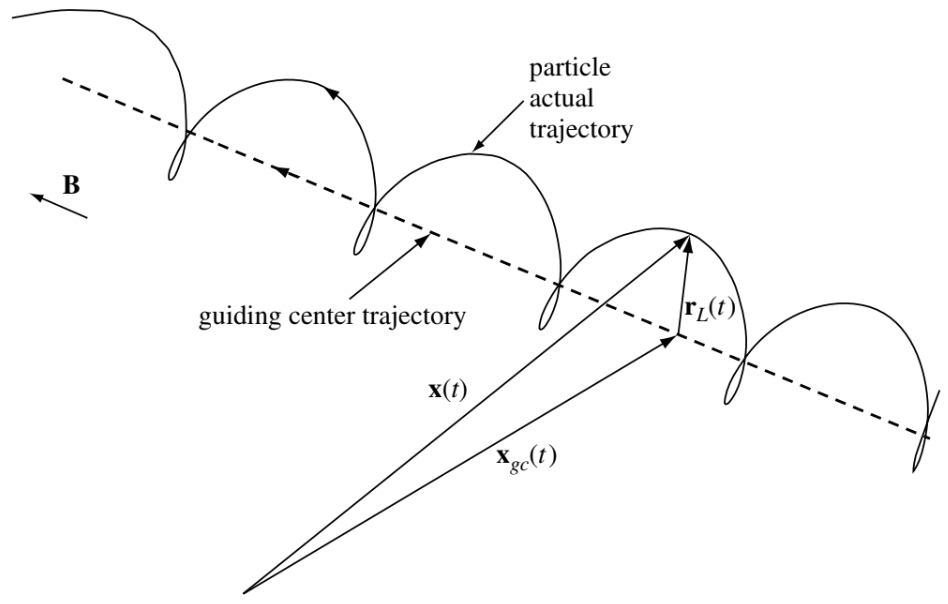
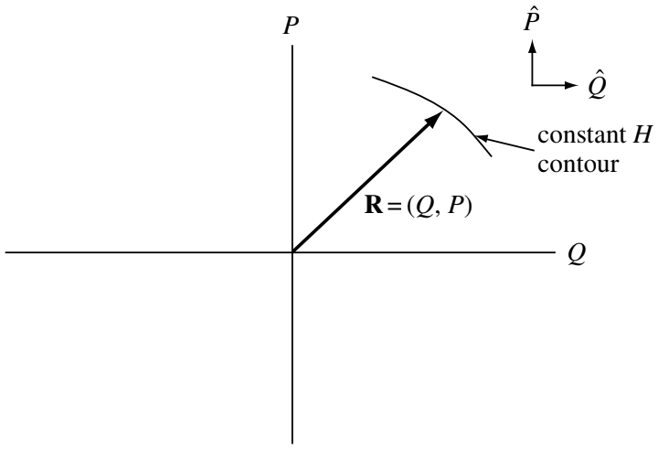
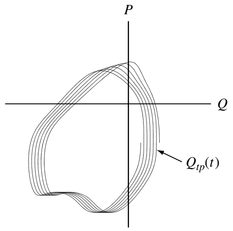

4 Single-Particle Motions
What makes plasmas particularly difficult to analyze is the fact that the densities fall in an intermediate range. Fluids like water are so dense that the motions of individual molecules do not have to be considered. Collisions dominate, and the simple equations of ordinary fluid dynamics suffice. At the other extreme in very low-density devices, only single-particle trajectories need to be considered; collective effects are often unimportant. Plasma behaves sometimes like fluids, and sometimes like a collection of individual particles. The first step in learning how to deal with this schizophrenic personality is to understand how single particles behave in electric and magnetic fields.
Single particle motion in neutral gases is trivial – particles move in straight lines until they hit other particles or the wall. Because of this simplicity, there is no point in keeping track of the details of single particle motion in a neutral gas and instead a statistical averaging of this motion suffices; this averaging shows that neutral gases have Maxwellian velocity distributions and are in a local thermodynamic equilibrium. In contrast, plasma particles are nearly collisionless and typically have complex trajectories that are strongly affected by both electric and magnetic fields.
As what will be shown in Section 8.2.5, the velocity distribution in a plasma will become Maxwellian when enough collisions have occurred to maximize the entropy. However, since collisions occur infrequently in hot plasmas, many important phenomena have time scales shorter than the time required for the plasma velocity distribution to become Maxwellian. A collisionless model is thus required to characterize these fast phenomena. In these situations randomization does not occur, entropy is conserved, the distribution function need not be Maxwellian, and the plasma is not in thermodynamic equilibrium. Thermodynamic concepts therefore do not apply, and the plasma is instead characterized by concepts from classical mechanics such as momentum or energy conservation of individual particles. In these collisionless situations the complex details of single particle dynamics are not washed out by collisions but instead persist and influence the macroscopic scale. As an example, the cyclotron resonance of a single particle can be important at the macroscopic scale in a collisionless plasma. This chapter examines various aspects of single particle motion and shows how these aspects can influence the macroscopic properties of a plasma.
Furthermore, study of single particle dynamics has a very direct relevance to Vlasov theory because, as shown in Section 8.3.1, any function constructed from constants of single particle motion is a valid solution of the collisionless Vlasov equation. Thus, knowledge of single particle dynamics provides a “repertoire” of constants of the motions from which solutions to the Vlasov equation suitable for various situations can be constructed.
Finally, the study of single particle motion develops valuable intuition regarding wave–particle interactions and identifies certain unusual situations, such as stochastic or non-adiabatic particle motion, that are beyond the descriptive capability of fluid models.
Here we assume that the EM fields are prescribed and not affected by the charged particles. The associated approach is often called test particle. Alternatively, we can say that it is possible to deduce intuitive and quite accurate analytic solutions for the drift of charged particles in arbitrarily complicated electric and magnetic fields provided the field are slowly changing in both space and time(this requirement is essentially the slowness requirement for adiabatic invariance introduced in Section 4.8). Drift solutions are obtained by solving the Lorentz equation \[ m\frac{\mathrm{d}\mathbf{v}}{\mathrm{d}t} = q\left( \mathbf{E}+\mathbf{v}\times\mathbf{B} \right) \] iteratively, taking advantage of the assumed separation of scales between fast and slow motions.
4.1 Uniform E and B Fields
The convention here is that velocity \(\mathbf{v}\) represents single particle velocity as you will see through most of this chapter.
4.1.1 E=0
In this case, a charged particle has a simple cyclotron gyration. The equation of motion is \[ m\frac{\mathrm{d}\mathbf{v}}{\mathrm{d}t} = q\mathbf{v}\times\mathbf{B} \]
Taking \(\widehat{z}\) to be the direction of \(\mathbf{B}\) (\(\mathbf{B} = B\widehat{z}\)), we have \[ \begin{aligned} m\dot{v}_x = qB v_y,\quad m\dot{v}_y = -qB v_x,\quad m\dot{v}_z = 0, \\ \ddot{v}_x = \frac{qB}{m}\dot{v}_y = -\Big( \frac{qB}{m}\Big)^2 v_x \\ \ddot{v}_y = \frac{qB}{m}\dot{v}_x = -\Big( \frac{qB}{m}\Big)^2 v_y \end{aligned} \]
This describes a simple harmonic oscillator at the cyclotron frequency, which we define to be \[ \omega_c \equiv \frac{| q | B}{m} \]
By the convention we have chosen, \(\omega_c\) is always nonnegative. The unit of \(\omega_c\) in SI units is rad/s. To convert it to hertz, we need to divide it by \(2\pi\). The solution of velocity is then \[ v_{x,y} = v_\perp \exp(\pm i \omega_c t + i\delta_{x,y}) \]
The \(\pm\) denote the sign of q. We may choose the phase \(\delta\) so that \[ v_x = v_\perp e^{i\omega_c t} = \dot{x} \] where \(v_\perp\) is a positive constant denoting the speed in the plane perpendicular to \(\mathbf{B}\). Then \[ v_y = \frac{m}{qB} \dot{v}_x = \pm \frac{1}{\omega_c}\dot{v}_x = \pm i v_\perp e^{i\omega_c t} = \dot{y} \]
Integrating once again, we have \[ \begin{aligned} x - x_0 &= -i\frac{v_\perp}{\omega_c}e^{i\omega_c t} \\ y - y_0 &= \pm i\frac{v_\perp}{\omega_c}e^{i\omega_c t} \end{aligned} \]
We define the Larmor radius to be \[ r_L \equiv \frac{v_\perp}{\omega_c} = \frac{mv_\perp}{|q| B} \tag{4.1}\]
Note that \(2\pi\) does not appear in Equation 4.1!
Taking the real part of the positions, we have \[ \begin{aligned} x - x_0 &= r_L\sin\omega_c t \\ y - y_0 &= \pm r_L \cos\omega_c t \end{aligned} \]
This describes a circular orbit about a guiding center (\(x_0, y_0\)) which is fixed. The direction of the gyration is always such that the magnetic field generated by the charged particle is opposite to the externally imposed field. Plasma particles, therefore, tend to reduce the magnetic field, and plasmas are diamagnetic. In addition to this motion, there is an arbitrary velocity \(v_z\) along \(\mathbf{B}\) which is not affected by \(\mathbf{B}\). The trajectory of a charged particle in space is, in general, a helix.
4.1.2 Finite E
If now we allow an electric field to be present, the motion will be found to be the sum of two motions: the usual circular Larmor gyration plus a drift of the guiding center. The assumed spatial uniformity and time-independence of the fields represent the extreme limit of assuming that the fields are slowly changing in space and time. We may choose \(\mathbf{E}\) to lie in the x-z plane so that \(E_y = 0\). As before, the z component of velocity is unrelated to the transverse components and can be treated separately. The equations of motion is now \[ m\dot{\mathbf{v}} = q( \mathbf{E} + \mathbf{v}\times\mathbf{B} ) \] whose z component is \[ \dot{v_z} = \frac{q}{m}E_z \] or \[ v_z = \frac{qE_z}{m}t + v_{z0} \]
This is a straightforward acceleration along \(\mathbf{B}\). The transverse components are \[ \begin{aligned} \dot{v_x} &= \frac{q}{m}E_x \pm \omega_c v_y \\ \dot{v_y} &= 0 \mp \omega_c v_x \end{aligned} \]
Differentiating, we have (for constant \(\mathbf{E}\)) \[ \begin{aligned} \ddot{v}_x &= -\omega_c^2 v_x \\ \ddot{v}_y &= \mp \omega_c \Big( \frac{q}{m}E_x \pm \omega_c v_y \Big) = -\omega_c^2 \Big( v_y + \frac{E_x}{B} \Big) \end{aligned} \]
We can write this as \[ \frac{\mathrm{d}^2}{\mathrm{d}t^2}\Big( v_y + \frac{E_x}{B} \Big) = -\omega_c^2\Big( v_y + \frac{E_x}{B} \Big) \] so that it reduces to the previous case if we replace \(v_y\) by \(v_y + (E_x/B)\). The velocity solution is then replaced by \[ \begin{aligned} v_x &= v_\perp e^{i\omega_c t} \\ v_y &= \pm v_\perp e^{i\omega_c t} - \frac{E_x}{B} \end{aligned} \]
The Larmor motion is the same as before, but there is superimposed a drift \(\mathbf{v}_{gc}\) of the guiding center in the \(-y\) direction (for \(E_x > 0\)).
To obtain a general formula for \(\mathbf{v}_{gc}\), we can solve the momentum equation in vector form. We may omit the \(m \mathrm{d}\mathbf{v}/\mathrm{d}t\) term, since this term gives only the circular motion at \(\omega_c\), which we already know about. Then the momentum equation becomes \[ \mathbf{E} + \mathbf{v}\times\mathbf{B} = 0 \]
Taking the cross product with \(\mathbf{B}\), we have \[ \mathbf{E}\times\mathbf{B} = \mathbf{B}\times(\mathbf{v}\times\mathbf{B}) = \mathbf{v}B^2 - \mathbf{B}(\mathbf{v}\cdot\mathbf{B}) \]
The transverse components with respect to \(\mathbf{B}\) of this equation are \[ \mathbf{v}_{gc} = \mathbf{E}\times\mathbf{B}/B^2 \equiv \mathbf{v}_E \]
We define this to be \(\mathbf{v}_E\), the electric field drift of the guiding center. In magnitude, this drift is \[ v_E = \frac{E(\text{V/m})}{B(\text{tesla})}\frac{\text{m}}{\text{sec}} \]
It is important to note that \(\mathbf{v}_E\) is independent of q, m, and \(v_\perp\). The reason is obvious from the following physical picture. In the first half-cycle of the ion’s orbit, it gains energy from the electric field and increases in \(v_\perp\) and, hence, in \(r_L\). In the second half-cycle, it loses energy and decreases in \(r_L\). This difference in \(r_L\) on the left and right sides of the orbit causes the drift \(v_E\). A negative electron gyrates in the opposite direction but also gains energy in the opposite direction; it ends up drifting in the same direction as an ion. For particles of the same velocity but different mass, the lighter one will have smaller \(r_L\) and hence drift less per cycle. However, its gyration frequency is also larger, and the two effects exactly cancel. Two particles of the same mass but different energy would have the same \(\omega_c\). The slower one will have smaller \(r_L\) and hence gain less energy from \(\mathbf{E}\) in a half-cycle. However, for less energetic particles the fractional change in \(r_L\) for a given change in energy is larger, and these two effects cancel. Another way of interpreting this behavior is to recall that according to the theory of special relativity the electric field \(\mathbf{E}^\prime\) observed in a frame moving with velocity \(\mathbf{u}\) is \(\mathbf{E}^\prime = \mathbf{E}+\mathbf{u}\times\mathbf{B}\) and so \(\mathbf{v}_E\) is simply a statement that a particle drifts in such a way to ensure that the electric field seen in its own frame vanishes.
The three-dimensional orbit in space for a charged particle with a nonzero initial velocity is therefore a slanted helix with changing pitch.
4.1.3 Gravitational Field
The foregoing result can be applied to other forces by replacing \(q\mathbf{E}\) in the equation of motion by a general force \(\mathbf{F}\). The guiding center drift caused by \(\mathbf{F}\) is then \[ \mathbf{v}_f = \frac{1}{q}\frac{\mathbf{F}\times\mathbf{B}}{B^2} \]
In particular, if \(\mathbf{F}\) is the force of gravity \(m\mathbf{g}\), there is a drift \[ \mathbf{v}_g = \frac{m}{q}\frac{\mathbf{g}\times\mathbf{B}}{B^2} \tag{4.2}\]
This is similar to the drift \(\mathbf{v}_E\) in that it is perpendicular to both the force and \(\mathbf{B}\), but it differs in one important respect. The drift \(\mathbf{v}_g\) changes sign with the particle’s charge. Under a gravitational force, ions and electrons drift in opposite directions, so there is a net current density in the plasma given by \[ \mathbf{j} = n(m_i+m_e)\frac{\mathbf{g}\times\mathbf{B}}{B^2} \]
The physical reason for this drift is again the change in Larmor radius as the particle gains and loses energy in the gravitational field. Now the electrons gyrate in the opposite sense to the ions, but the force on them is in the same direction, so the drift is in the opposite direction. The magnitude of \(\mathbf{v}_g\) is usually negligible, but when the lines of force (i.e. magnetic field lines) are curved, there is an effective gravitational force due to centrifugal force. This force, which is not negligible, is independent of mass; this is why we did not stress the m dependence of the drift here. Centrifugal force is the basis of a plasma instability called the “gravitational” instability, which has nothing to do with real gravity.
And now it shall be clear that the \(\mathbf{E}\times\mathbf{B}\) drift analysis can be easily generalized to describe the effect on a charged particle of any force orthogonal to \(\mathbf{B}\) by simply making the replacement \(\mathbf{E}\rightarrow\mathbf{F}/q\) in the Lorentz equation. Thus, any spatially uniform, temporally constant force orthogonal to \(\mathbf{B}\) will cause a drift \[ \mathbf{v}_F = \frac{\mathbf{F}\times\mathbf{B}}{qB^2} \] which leads to two counter-intuitive and important conclusions:
A steady-state electric field perpendicular to a magnetic field does not drive currents in a plasma, but instead causes a bulk motion of the entire plasma across the magnetic field with the velocity \(\mathbf{v}_E\).
A steady-state force (e.g., gravity, centrifugal force, etc.) perpendicular to the magnetic field causes oppositely directed motions for electrons and ions and so drives a cross-field current \[ \mathbf{j}_F = \sum_\sigma n_\sigma \frac{\mathbf{F}\times\mathbf{B}}{B^2} \]
4.2 Nonuniform B Field
Now that the concept of a guiding center drift is firmly established, we can discuss the motion of particles in inhomogeneous fields — \(\mathbf{E}\) and \(\mathbf{B}\) fields which vary in space or time. For uniform fields we were able to obtain exact expressions for the guiding center drifts. As soon as we introduce inhomogeneity, the problem becomes too complicated to solve exactly. To get an approximate answer, it is customary to expand in the small ratio \(r_L/L\), where L is the scale length of the inhomogeneity. This type of theory, called orbit theory, can become extremely involved. We shall examine only the simplest cases, where only one inhomogeneity occurs at a time.
4.2.1 ∇B ⊥ B: Grad-B Drift
Here the magnetic field lines are straight, but their density increases, say, in the y direction. We can anticipate the result by using our simple physical picture. The gradient in |B| causes the Larmor radius to be larger at the bottom of the orbit than at the top, and this should lead to a drift, in opposite directions for ions and electrons, perpendicular to both B and \(\nabla B\). The drift velocity should obviously be proportional to \(r_L/L\) and to \(v_\perp\).
Consider the Lorentz force \(\mathbf{F} = q\mathbf{v}\times\mathbf{B}\), averaged over a gyration. Clearly, \(\bar{F}_x = 0\), since the particle spends as much time moving up as down. We wish to calculate \(\bar{F}_y\), in an approximate fashion, by using the undisturbed orbit of the particle to find the average. The undisturbed orbit is given by the solution in the first section for a uniform \(\mathbf{B}\) field. Taking the real part of the solution for \(v_x\) and \(y\), we have \[ F_y = -q v_x B_z(y) = -q v_\perp(\cos \omega_c t) \Big[ B_0 \pm r_L(\cos\omega_c t )\frac{\partial B}{\partial y} \Big] \] where we have made a Taylor expansion of \(\mathbf{B}\) field about the point \(x_0=0, y_0=0\) \[ \begin{aligned} \mathbf{B} &= \mathbf{B}_0 + (\mathbf{r}\cdot\nabla)\mathbf{B} + ... \\ Bz &= B_0 + y(\partial B_z/\partial y) + ... \end{aligned} \]
This expansion of course requires \(r_L / L \ll 1\), where L is the length scale of \(\partial Bz/\partial y\). The first term above averages to zero in a gyration, and the average of \(\cos^2 \omega_c t\) is \(1/2\), so that \[ \bar{F}_y = \mp q v_\perp r_L \frac{1}{2}\frac{\partial B}{\partial y} \]
The guiding center drift velocity is then \[ \mathbf{v}_{gc} = \frac{1}{q}\frac{\mathbf{F}\times\mathbf{B}}{B^2} = \frac{1}{q}\frac{\bar{F}_y}{|B|}\widehat{x} = \mp \frac{v_\perp r_L}{B}\frac{1}{2} \frac{\partial B}{\partial y} \widehat{x} \] where we have used the formula shown previously. Since the choice of the y axis was arbitrary, this can be generalized to \[ \mathbf{v}_{\nabla B} = \pm \frac{1}{2}v_\perp r_L \frac{\mathbf{B}\times \nabla B}{B^2} \]
This has all the dependences we expected from the physical picture; only the factor \(\frac{1}{2}\) (arising from the averaging) was not predicted. Note that the \(\pm\) stands for the sign of the charge, and lightface \(B\) stands for \(|B|\). The quantity \(\mathbf{v}_{\nabla B}\) is called the grad-B drift; it is in opposite directions for ions and electrons and causes a current transverse to \(\mathbf{B}\). An exact calculation of \(\mathbf{v}_{\nabla B}\) would require using the exact orbit, including the drift, in the averaging process.
4.2.2 Curved B: Curvature Drift
Here we assume the magnetic field lines to be curved with a constant radius of curvature \(R_c\), and we take \(|B|\) to be constant. Such a field does not obey Maxwell’s equations in a vacuum, so in practice the grad-B drift will always be added to the effect derived here. A guiding center drift arises from the centrifugal force felt by the particles as they move along the field lines in their thermal motion. If \(v_\parallel^2\) denotes the average square of the component of random velocity along \(\mathbf{B}\), and \(\mathbf{R}_c\) denotes the radius of curvature vector from the center to the curve, the average centrifugal force is \[ \mathbf{F}_{cf} = \frac{mv_\parallel^2}{R_c}\widehat{r} = mv_\parallel^2\frac{\mathbf{R}_c}{R_c^2} \]
According to the guiding center drift formula, this gives rise to a drift \[ \mathbf{v}_{R} = \frac{1}{q}\frac{\mathbf{F}_{cf}\times\mathbf{B}}{B^2} = \frac{mv_\parallel^2}{qB^2}\frac{\mathbf{R}_c \times\mathbf{B}}{R_c^2} \]
The drift \(\mathbf{v}_R\) is called the curvature drift.
We must now compute the grad-B drift which accompanies this when the decrease of \(|B|\) with radius is taken into account. In a vacuum, we have \(\nabla\times\mathbf{B} = 0\). In the cylindrical coordinates, \(\nabla\times\mathbf{B}\) only has a \(z\) component, since \(\mathbf{B}\) has only a \(\theta\) component and \(\nabla B\) only an \(r\) component. We then have \[ (\nabla\times\mathbf{B})_z = \frac{1}{r}\frac{\partial}{\partial r}(rB_\theta) = 0,\, B\propto \frac{1}{r} \]
Thus \[ |B| \propto \frac{1}{R_c},\, \frac{\nabla B}{B} = - \frac{\mathbf{R}_c}{R_c^2} \]
Using the expression of the grad-B drift, we have \[ \mathbf{v}_{\nabla B} = \mp \frac{1}{2}\frac{v_\perp r_L}{B^2}\mathbf{B}\times\frac{\mathbf{R}_c}{R_c^2} = \pm \frac{1}{2}\frac{v_\perp^2}{\omega_c}\frac{\mathbf{R}_c\times\mathbf{B}}{R_c^2 B} = \frac{1}{2}\frac{m}{q}v_\perp^2\frac{\mathbf{R}_c\times\mathbf{B}}{R_c^2 B^2} \]
Adding this to \(\mathbf{v}_R\) , we have the total drift in a curved vacuum field: \[ \mathbf{v}_R + \mathbf{v}_{\nabla B} = \frac{m}{q}\frac{\mathbf{R}_c\times\mathbf{B}}{R_c^2 B^2}\Big( v_\parallel^2 + \frac{1}{2}v_\perp^2 \Big) \]
It is unfortunate that these drifts add. This means that if one bends a magnetic field into a torus for the purpose of confining a thermonuclear plasma, the particles will drift out of the torus no matter how one juggles the temperatures and magnetic fields.
For a Maxwellian distribution, \(\bar{v_\parallel^2}\) and \(\frac{1}{2}\bar{v_\perp^2}\) are each equal to \(k_B T/m\), since \(v_\perp\) involves two degrees of freedom. Then the average curved-field drift can be written as \[ \bar{\mathbf{v}}_{R+\nabla B} = \pm \frac{v_{th}^2}{R_c\omega_c}\widehat{y} = \pm\frac{\bar{r}_L}{R_c}v_{th}\widehat{y} \] where \(\widehat{y}\) here is the direction of \(\widehat{R}_c\times\mathbf{B}\). This shows that \(\bar{\mathbf{v}}_{R+\nabla B}\) depends on the charge of the species but not on its mass.
4.2.3 ∇B ∥ B: Magnetic Mirrors
Now we consider a magnetic field which is pointed primarily in the z direction and whose magnitude varies in the z direction. Let the field be axisymmetric, with \(B_\theta = 0\) and \(\partial/\partial\theta = 0\). Since the magnetic field lines converge and diverge, there is necessarily a component \(B_r\). We wish to show that this gives rise to a force which can trap a particle in a magnetic field.
We can obtain \(B_r\) from \(\nabla\cdot\mathbf{B} = 0\): \[ \frac{1}{r}\frac{\partial}{\partial r}(rB_r) + \frac{\partial B_z}{\partial z} = 0 \]
If \(\partial \mathbf{B}_z/\partial z\) is given at \(r=0\) and does not vary much with r, we have approximately \[ \begin{aligned} rB_r &= -\int_0^r r\frac{\partial B_z}{\partial z}dr \simeq -\frac{1}{2}r^2 \Big[ \frac{\partial \mathbf{B}_z}{\partial z} \Big]_{r=0} \\ B_r &= -\frac{1}{2}r \Big[ \frac{\partial \mathbf{B}_z}{\partial z} \Big]_{r=0} \end{aligned} \]
The variation of \(|B|\) with r causes a grad-B drift of guiding centers about the axis of symmetry, but there is no radial grad-B drift, because \(\partial B/\partial \theta = 0\). The components of the Lorentz force are \[ \begin{aligned} F_r &= q(\underbrace{v_\theta B_z}_{\small{1}} - v_z \cancel{B_\theta}) \\ F_\theta &= q(\underbrace{-v_r B_z}_{\small{2}} + \underbrace{v_z B_r}_{\small{3}}) \\ F_z &= q(v_r \cancel{B}_\theta - \underbrace{v_\theta B_r}_{\small{4}}) \end{aligned} \]
Two terms vanish if \(B_\theta = 0\), and terms 1 and 2 give rise to the usual Larmor gyration. Term 3 vanishes on the axis; when it does not vanish, this azimuthal force causes a drift in the radial direction. This drift merely makes the guiding centers follow the magnetic field lines. Term 4 is the one we are interested in. Using the expression of \(B_r\), we have \[ F_z = \frac{1}{2}q v_\theta r_L \frac{\partial B_z}{\partial z} \]
We must now average over one gyration. For simplicity, consider a particle whose guiding center lies on the axis. Then \(v_\theta\) is a constant during a gyration; depending on the sign of q, \(v_\theta\) is \(\mp v_\perp\). Since \(r = r_L\) , the average force is \[ \bar{F}_z = \mp \frac{1}{2}q v_\perp r_L \frac{\partial B_z}{\partial z} = \mp \frac{1}{2}q\frac{v_\perp^2}{\omega_c} \frac{\partial B_z}{\partial z} = -\frac{1}{2}\frac{mv_\perp^2}{B} \frac{\partial B_z}{\partial z} \]
We define the magnetic moment of the gyrating particle to be \[ \mu \equiv \frac{1}{2}mv_\perp^2 / B \] so that \[ \bar{F}_z = -\mu \frac{\partial B_z}{\partial z} \]
This is a specific example of the force on a diamagnetic particle, which in general can be written \[ \mathbf{F}_\parallel = -\mu\frac{\partial B}{\partial \mathbf{s}} = -\mu\nabla_\parallel B \] where \(\mathrm{d}\mathbf{s}\) is a line element along \(\mathbf{B}\). Note that the definition of magnetic moment here is the same as the usual definition for the magnetic moment of a current loop with area A and current I: \(\mu = IA\). In the case of a singly charged ion, I is generated by a charge e coming around \(\omega_c / 2\pi\) times a second: \(I = e\omega_c/2\pi\). The area A is \(\pi r_L^2 = \pi r_L^2/\omega_c^2\). Thus \[ \mu = \frac{e\omega_c}{2\pi}\frac{\pi r_L^2}{\omega_c^2} = \frac{1}{2}\frac{v_\perp^2 e}{\omega_c} = \frac{1}{2}\frac{mv_\perp^2}{B} \]
As the particle moves into regions of stronger or weaker B, its Larmor radius changes, but μ remains invariant. To prove this, consider the component of the equation of motion along \(\mathbf{B}\): \[ m\frac{\mathrm{d}v_\parallel}{\mathrm{d}t} = -\mu \frac{\partial B}{\partial s} \]
Multiplying by \(v_\parallel\) on the left and its equivalent \(ds/\mathrm{d}t\) on the right, we have \[ mv_\parallel \frac{\mathrm{d}v_\parallel}{\mathrm{d}t} = \frac{\mathrm{d}}{\mathrm{d}t}\Big( \frac{1}{2}mv_\parallel^2 \Big) = -\mu\frac{\partial B}{\partial s}\frac{ds}{\mathrm{d}t} = -\mu\frac{\mathrm{d}B}{\mathrm{d}t} \]
Here \(\mathrm{d}B/\mathrm{d}t\) is the variation of \(B\) as seen by the particle; \(B\) itself is constant. The particle’s energy must be conserved, so we have \[ \frac{\mathrm{d}}{\mathrm{d}t}\Big( \frac{1}{2}mv_\parallel^2 + \frac{1}{2}mv_\perp^2 \Big) = \frac{\mathrm{d}}{\mathrm{d}t}\Big( \frac{1}{2}mv_\parallel^2 + \mu B \Big) = 0 \]
With the previous equation this becomes \[ -\mu\frac{\mathrm{d}B}{\mathrm{d}t} + \frac{\mathrm{d}}{\mathrm{d}t}(\mu B) = 0 \] so that \[ \frac{\mathrm{d}\mu}{\mathrm{d}t} = 0 \]
The invariance of \(\mu\) is the basis for one of the primary schemes for plasma confinement: the magnetic mirror. As a particle moves from a weak-field region to a strong-field region in the course of its thermal motion, it sees an increasing B, and therefore its \(v_\perp\) must increase in order to keep μ constant. Since its total energy must remain constant, \(v_\parallel\) must necessarily decrease. If B is high enough in the “throat” of the mirror, \(v_\parallel\) eventually becomes zero; and the particle is “reflected” back to the weak-field region. It is, of course, the force \(\mathbf{F}_\parallel\) which causes the reflection. The nonuniform field of a simple pair of coil form two magnetic mirrors between which a plasma can be trapped. This effect works on both ions and electrons.
The trapping is not perfect, however. For instance, a particle with \(v_\perp = 0\) will have no magnetic moment and will not feel any force along \(\mathbf{B}\). A particle with small \(v_\perp / v_\parallel\) at the midplane (\(B = B_0\)) will also escape if the maximum field \(B_m\) is not large enough. For given \(B_0\) and \(B_m\), which particles will escape? A particle with \(v_\perp = v_{\perp 0}\) and \(v_\parallel = v_{\parallel 0}\) at the midplane will have \(v_\perp = v_\perp^\prime\) and \(v_\parallel = 0\) at its turning point. Let the field be \(B^\prime\) there. Then the invariants of \(\mu\) yields \[ \frac{1}{2}\frac{mv_{\perp 0}^2}{B_0} = \frac{1}{2}\frac{m{v_{\perp 0}^{\prime}}^2}{B^\prime} \]
Conservation of energy requires \[ {v_{\perp 0}^{\prime}}^2 = v_{\perp 0}^2 + v_{\parallel 0}^2 \equiv v_0^2 \]
Combining the above two equations, we find \[ \frac{B_0}{B^\prime} = \frac{v_{\perp 0}^2}{{v_{\perp}^{\prime}}^2} \equiv \sin^2 \theta \] where \(\theta\) is the pitch angle of the orbit in the weak-field region. Particles with smaller θ will mirror in regions of higher B. If θ is too small, \(B^\prime\) exceeds \(B_m\); and the particles does not mirror at all. Replacing \(B^\prime\) by \(B_m\), we see that the smallest \(\theta\) of a confined particle is given by \[ \sin^2 \theta_m = \frac{B_0}{B_m} \equiv \frac{1}{R_m} \] where \(R_m\) is the mirror ratio. It defines the boundary of a region in velocity space in the shape of a cone, called a loss cone. Particles lying within the loss cone are not confined. Consequently, a mirror-confined plasma is never isotropic. Note that the loss cone is independent of q or m. Without collisions, both ions and electrons are equally well confined. When collisions occur, particles are lost when they change their pitch angle in a collision and are scattered into the loss cone. Generally, electrons are lost more easily because they have a higher collision frequency.
The magnetic mirror was first proposed by Enrico Fermi as a mechanism for the acceleration of cosmic rays. Protons bouncing between magnetic mirrors approaching each other at high velocity could gain energy at each bounce. How such mirrors could arise is another story. A further example of the mirror effect is the confinement of particles in the Van Allen belts. The magnetic field of the earth, being strong at the poles and weak at the equator, forms a natural mirror with rather large \(R_m\).
4.3 Nonuniform E Field
Now we let the magnetic field be uniform and the electric field be nonuniform. For simplicity, we assume \(\mathbf{E}\) to be in the x direction and to vary sinusoidally in the x direction: \[ \mathbf{E} \equiv E_0 (\cos kx)\widehat{x} \]
This field distribution has a wavelength \(\lambda = 2\pi / k\), and is the result of a sinusoidal distribution of charges, which we need not specify. In practice, such a charge distribution can arise in a plasma during a wave motion. The equation of motion is \[ m\frac{\mathrm{d}\mathbf{v}}{\mathrm{d}t} = q[\mathbf{E}(x) + \mathbf{v}\times\mathbf{B}] \] whose transverse components are \[ \begin{aligned} \dot{v}_x &= \frac{qB}{m}v_y + \frac{q}{m}E_x(x) \\ \dot{v}_y &= -\frac{qB}{m}v_x \end{aligned} \]
\[ \begin{aligned} \ddot{v}_x &= -\omega_c^2 v_x \pm \omega_c \frac{\dot{E}_x}{B} \\ \ddot{v}_y &= -\omega_c^2 v_y -\omega_c^2\frac{E_x(x)}{B} \end{aligned} \]
Here \(E_x(x)\) is the electric field at the position of the particle. To evaluate this, we need to know the particle’s orbit, which we are trying to solve for in the first place. If the electric field is weak, we may, as an approximation, use the undisturbed orbit to evaluate \(E_x(x)\). The orbit in the absence of the E field was given before \[ x = x_0 + r_L\sin \omega_c t \] so we have \[ \ddot{v}_y = -\omega_c^2 v_y -\omega_c^2\frac{E_0}{B}\cos k (x_0 + r_L \sin\omega_c t) \]
Anticipating the result, we look for a solution which is the sum of a gyration at \(\omega_c\) and a steady drift \(\mathbf{v}_E\). Since we are interested in finding an expression for \(v_E\), we take out the gyratory motion by averaging over a cycle. The \(v_x\) component then gives \(\bar{v}_x = 0\).1 In the \(v_y\) component, the oscillating term \(\ddot{v}_y\) clearly averages to zero, and we have
\[ \bar{\ddot{v}_y} = 0 = -\omega_c^2 \bar{v}_y -\omega_c^2\frac{E_0}{B}\bar{\cos k (x_0 + r_L \sin\omega_c t)} \]
Expanding the cosine, we have \[ \cos k (x_0 + r_L \sin\omega_c t) = \cos(kx_0) \cos(kr_L \sin\omega_c t) - \sin(kx_0) \sin(kr_L \sin\omega_c t) \]
It will suffice to treat the small Larmor radius case, \(kr_L \ll 1\). The Taylor expansions allow us to write \[ \cos k (x_0 + r_L \sin\omega_c t) \approx \cos(kx_0)\big( 1 - \frac{1}{2}k^2r_L^2 \sin^2\omega_c t \big) - \sin(kx_0)k r_L \sin\omega_c t \]
The last term vanishes upon averaging over time, and it gives \[ \bar{v}_y = -\frac{E_0}{B}\cos(kx_0)\big( 1 - \frac{1}{4}k^2r_L^2 \big) = -\frac{E_x(x_0)}{B}\big( 1 - \frac{1}{4}k^2r_L^2 \big) \]
Thus the usual \(\mathbf{E}\times\mathbf{B}\) drift is modified by the inhomogeneity to read \[ \mathbf{v}_E = \frac{\mathbf{E}\times\mathbf{B}}{B^2}\big( 1 - \frac{1}{4}k^2r_L^2 \big) \]
The physical reason for this is easy to see. An ion with its guiding center at a maximum of \(\mathbf{E}\) actually spends a good deal of its time in regions of weaker \(\mathbf{E}\). Its average drift, therefore, is less than E/B evaluated at the guiding center. In a linearly varying \(\mathbf{E}\) field, the ion would be in a stronger field on one side of the orbit and in a field weaker by the same amount on the other side; the correction to \(\mathbf{v}_E\) then cancels out. From this it is clear that the correction term depends on the second derivative of \(\mathbf{E}\). For the sinusoidal distribution we assumed, the second derivative is always negative with respect to \(\mathbf{E}\). For an arbitrary variation of \(\mathbf{E}\), we need only replace \(ik\) by \(\nabla\) and write the drift as \[ \mathbf{v}_E = \Big( 1 + \frac{1}{4}r_L^2\nabla^2 \Big) \frac{\mathbf{E}\times\mathbf{B}}{B^2} \tag{4.3}\]
The second term is called the finite-Larmor-radius effect. What is the significance of this correction? Since \(r_L\) is much larger for ions than for electrons, \(\mathbf{v}_E\) is no longer independent of species. If a density clump occurs in a plasma, an electric field can cause the ions and electrons to separate, generating another electric field. If there is a feedback mechanism that causes the second electric field to enhance the first one, \(\mathbf{E}\) grows indefinitely, and the plasma is unstable. Such an instability, called a drift instability, is one type of plasma instabilities. The grad-B drift, of course, is also a finite-Larmor-radius effect and also causes charges to separate. However, \(\mathbf{v}_{\nabla B} \propto kr_L\) whereas the correction term above is proportional to \(k^2 r_L^2\). The nonuniform-E-field effect, therefore, is important at relatively large k, or small scale lengths of the inhomogeneity. For this reason, drift instabilities belong to a more general class called microinstabilities.
4.4 Time-Varying E Field
Let us now take \(\mathbf{E}\) and \(\mathbf{B}\) to be uniform in space but varying in time. First, consider the case in which \(\mathbf{E}\) alone varies sinusoidally in time, and let it lie along the x axis: \[ \mathbf{E} = E_0 e^{i\omega t}\widehat{x} \]
Since \(\dot{E}_x = i\omega E_x\), we can write the velocity x-component equation as \[ \ddot{v}_x = -\omega_c^2 \Big( v_x \mp \frac{i\omega}{\omega_c}\frac{\tilde{E}_x}{B} \Big) \]
Let us define \[ \begin{aligned} \tilde{v}_p &\equiv \pm \frac{i\omega}{\omega_c}\frac{\tilde{E}_x}{B} \\ \tilde{v}_E &\equiv \frac{\tilde{E}_x}{B} \end{aligned} \] where the tilde has been added merely to emphasize that the drift is oscillating. The plus (minus) sign, as usual, denotes positive (negative) \(q\). Now the x and y velocity component equations can be written as \[ \begin{aligned} \ddot{v}_x &= -\omega_c^2(v_x - \tilde{v}_p) \\ \ddot{v}_y &= -\omega_c^2(v_y - \tilde{v}_E) \end{aligned} \]
By analogy with the derivation in the case of a uniform EM field, we try a solution which is the sum of a drift and a gyratory motion: \[ \begin{aligned} v_x &= v_\perp e^{i\omega_c t} + \tilde{v}_p \\ v_y &= \pm i v_\perp e^{i\omega_c t} + \tilde{v}_E \end{aligned} \]
If we now differentiate twice with respect to time, we find \[ \begin{aligned} \ddot{v}_x &= -\omega_c^2 v_x + (\omega_c^2 - \omega^2)\tilde{v}_p \\ \ddot{v}_y &= -\omega_c^2 v_y + (\omega_c^2 - \omega^2)\tilde{v}_E \end{aligned} \]
This is not the same as the previous expressions right above unless \(\omega^2 \ll \omega_c^2\). If we now make the assumption that \(\mathbf{E}\) varies slowly, so that \(\omega^2 \ll \omega_c^2\), then there we have the approximate solution.
The solution of velocities in x and y tells us that the guiding center motion has two components. The y component, perpendicular to \(\mathbf{B}\) and \(\mathbf{E}\), is the usual \(\mathbf{E}\times\mathbf{B}\) drift, except that \(v_E\) now oscillates slowly at the frequency \(\omega\). The x component, a new drift along the direction of \(\mathbf{E}\), is called the polarization drift. By replacing \(i\omega\) with \(\partial/\partial t\), we can generalize the expression of \(v_p\) and define the polarization drift as \[ \mathbf{v}_p = \pm \frac{1}{\omega_c B}\frac{\mathrm{d}\mathbf{E}}{\mathrm{d}t} \]
Since \(\mathbf{v}_p\) is in opposite directions for ions and electrons, there is a polarization current; for Z = 1, this is \[ \mathbf{j}_p = ne(v_{ip} - v_{ep}) = \frac{ne}{eB^2}(M+m)\frac{\mathrm{d}\mathbf{E}}{\mathrm{d}t} = \frac{\rho}{B^2}\frac{\mathrm{d}\mathbf{E}}{\mathrm{d}t} \tag{4.4}\] where \(\rho\) is the mass density.
The physical reason for the polarization current is simple. Consider an ion at rest in a magnetic field. If a field \(\mathbf{E}\) is suddenly applied, the first thing the ion does is to move in the direction of \(\mathbf{E}\). Only after picking up a velocity \(\mathbf{v}\) does the ion feel a Lorentz force \(e\mathbf{v}\times\mathbf{B}\) and begin to move perpendicular to both fields. If \(\mathbf{E}\) is now kept constant, there is no further \(\mathbf{v}_p\) drift but only a \(\mathbf{v}_E\) drift. However, if \(\mathbf{E}\) is reversed, there is again a momentary drift, this time to the left. Thus \(\mathbf{v}_p\) is a startup drift due to inertia and occurs only in the first half-cycle of each gyration during which \(\mathbf{E}\) changes. Consequently, \(\mathbf{v}_p\) goes to zero when \(\omega/\omega_c \ll 1\).
The polarization effect in a plasma is similar to that in a solid dielectric, where \(\mathbf{D} = \epsilon_0\mathbf{E} + \mathbf{P}\). The dipoles in a plasma are ions and electrons separated by a distance \(r_L\). But since ions and electrons can move around to preserve quasineutrality, the application of a steady \(\mathbf{E}\) field does not result in a polarization field \(\mathbf{P}\). However, if \(\mathbf{E}\) oscillates, an oscillating current \(\mathbf{j}_p\) results from the lag due to the ion inertia.
It is obvious that in this case the \(\mathbf{E}\times\mathbf{B}\) drift speed depends on time and the guiding center coordinate system is non-inertial. The polarization drift arises from the fictuous (inertial) force \(-m \mathrm{d}\mathbf{v}_E/\mathrm{d}t\). It means that the guiding center locations will not change due to the polarization drift!
Let us demonstrate this in a single configuration. Assume \(\mathbf{B}=B\hat{z}\), \(\mathbf{E}=Et\hat{y}\). Let \(\theta\) be the angle in the perpendicular plane: \[ \mathbf{v}_\perp = v_\perp\hat{e}_\perp = v_\perp(\cos\theta\hat{x}+\sin\theta\hat{y}) \]
The guiding center is defined as \[ \mathbf{X} = \mathbf{x} - \mathbf{r}_L = \mathbf{x} - \mathbf{v}_\perp / \omega_c = \mathbf{x} - \frac{v_\perp}{\omega_c}\hat{\theta} \] where \(\hat{\theta} = \mathbf{b}\times\hat{e}_\perp\). The equation of motion \[ \begin{aligned} m\frac{\mathrm{d}\mathbf{v}}{\mathrm{d}t} &= q(\mathbf{E} +\mathbf{v}\times\mathbf{B}) \\ \frac{\mathrm{d}\mathbf{x}}{\mathrm{d}t} &= \mathbf{v} \end{aligned} \] in the guiding center coordinates the two selected scalar equations can be written as \[ \begin{aligned} m\frac{\mathrm{d}v_x}{\mathrm{d}t} &= qE_x + qv_yB \\ \frac{dX_y}{\mathrm{d}t} &= v_y - \frac{1}{\omega_c}\frac{\mathrm{d}v_x}{\mathrm{d}t} \end{aligned} \] such that \[ \frac{dX_y}{\mathrm{d}t} = 0 \]
4.5 Time-Varying B Field
Finally, we allow the magnetic field to vary in time. Since the Lorentz force is always perpendicular to \(\mathbf{v}\), a magnetic field itself cannot impart energy to a charged particle. However, associated with the time-varying \(\mathbf{B}\) is an electric field given by \[ \nabla\times\mathbf{E} = -\dot{\mathbf{B}} \] and this can accelerate the particles. We can no longer assume the fields to be completely uniform. Let \(\mathbf{v}_\perp = \mathrm{d}\mathbf{l}/\mathrm{d}t\) be the transverse velocity, \(\mathbf{l}\) being the element of the path along a particle trajectory (with \(v_\parallel\) neglected). Taking the scalar product of the equation of motion with \(\mathbf{v}_\perp\), we have \[ \frac{\mathrm{d}}{\mathrm{d}t}\Big( \frac{1}{2}mv_\perp^2 \Big) = q\mathbf{E}\cdot\mathbf{v}_\perp = q\mathbf{E}\cdot\frac{\mathrm{d}\mathbf{l}}{\mathrm{d}t} \]
The change in one gyration is obtained by integrating over one period: \[ \delta \Big( \frac{1}{2}mv_\perp^2 \Big) = \int_0^{2\pi/\omega_c}q\mathbf{E}\cdot\frac{\mathrm{d}\mathbf{l}}{\mathrm{d}t}\mathrm{d}t \]
If the field changes slowly, we can replace the time integral by a line integral over the unperturbed orbit: \[ \delta \Big( \frac{1}{2}mv_\perp^2 \Big) = \oint q\mathbf{E}\cdot \mathrm{d}\mathbf{l} = q\int_s (\nabla\times\mathbf{E})\cdot \mathrm{d}\mathbf{S} = -q \int_s\dot{\mathbf{B}}\cdot \mathrm{d}\mathbf{S} \]
Here \(\mathbf{S}\) is the surface enclosed by the Larmor orbit and has a direction given by the right-hand rule when the fingers point in the direction of \(\mathbf{v}\). Since the plasma is diamagnetic, we have \(\mathbf{B}\cdot \mathrm{d}\mathbf{S}<0\) for ions and \(\mathbf{B}\cdot \mathrm{d}\mathbf{S}>0\) for electrons. Then \[ \delta \Big( \frac{1}{2}mv_\perp^2 \Big) = \pm q \dot{B}\pi r_L^2 = \pm q \pi\dot{B}\frac{v_\perp^2}{\omega_c}\frac{m}{\pm qB} = \frac{\frac{1}{2}mv_\perp^2}{B}\cdot \frac{2\pi \dot{B}}{\omega_c} \]
The quantity \(\frac{2\pi\dot{B}}{\omega_c} = \frac{\dot{B}}{\omega_c}\) is just the change \(\delta B\) during one period of gyration. Thus \[ \delta \Big( \frac{1}{2}mv_\perp^2 \Big) = \mu \delta B \]
Since the left-hand-side is \(\delta(\mu B)\), we have the desired result \[ \delta \mu = 0 \]
The magnetic moment is invariant in slowly varying magnetic fields.
As the B field varies in strength, the Larmor orbits expand and contract, and the particles lose and gain transverse energy. This exchange of energy between the particles and the field is described very simply by the invariant of magnetic moment. The invariance of \(\mu\) allows us to prove easily the following well-known theorem: The magnetic flux through a Larmor orbit is constant.
The flux \(\Phi\) is given by \(BS\), with \(S = \pi r_L^2\). Thus \[ \Phi = B\pi\frac{v_\perp^2}{\omega_c^2} = B\pi\frac{v_\perp^2 m^2}{q^2 B^2} = \frac{2\pi m}{q^2}\frac{\frac{1}{2}mv_\perp^2}{B} = \frac{2\pi m}{q^2}\mu \]
Therefore, \(\Phi\) is constant if \(\mu\) is constant.
This property is used in a method of plasma heating known as adiabatic compression. A plasma is injected into a sequence of magnetic mirrors and by keep increasing the magnetic field in subsequent mirrors we can increase the plasma velocities.
4.6 Drifts in slowly changing arbitrary fields
Most of the drift motion we have considered before can be described under one framework. Consider in arbitrarily complicated but slowly changing fields subject to the following restrictions:
- The time variation is so slow that the fields can be considered as approximately constant during each cyclotron period of the motion.
- The fields vary so gradually in space that they are nearly uniform over the spatial extent of any single complete cyclotron drift.
- The electric and magnetic fields are related by Faraday’s law \(\nabla\times\mathbf{E}=-\dot{\mathbf{B}}\).
- \(E/B\ll c\) so that relativistic effects are unimportant (otherwise there would be a problem with \(v_E\) becoming faster than \(c\).)
In this more general situation a charged particle will gyrate about \(\mathbf{B}\), stream parallel to \(\mathbf{B}\), have \(\mathbf{E}\times\mathbf{B}\) drifts across \(\mathbf{B}\), and may also have force-based drifts. The analysis is based on the assumption that all these various motions are well-separated; this assumption is closely related to the requirement that the fields vary slowly and also to the concept of adiabatic invariant.
The assumed separation of scales is expressed by decomposing the particle motion into a fast, oscillatory component — the gyro-motion — and a slow component obtained by averaging out the gyromotion. As sketched in Figure 4.1, the particle’s position and velocity are each decomposed into two terms \[ \mathbf{x}(t) = \mathbf{x}_\mathrm{gc}(t) + \mathbf{r}_L(t),\quad \mathbf{v}(t) = \frac{\mathrm{d}\mathbf{x}}{\mathrm{d}t} = \mathbf{v}_\mathrm{gc}(t) + \mathbf{v}_L(t) \] where \(\mathbf{r}_L(t), \mathbf{v}_L(t)\) give the fast gyration of the particle in a cyclotron orbit and \(\mathbf{x}_\mathrm{gc}(t), \mathbf{v}_\mathrm{gc}(t)\) are the slowly changing motion of the guiding center obtained after averaging out the cyclotron motion. Ignoring any time dependence of the fields for now, the magnetic field seen by the particle can be written as \[ \begin{aligned} \mathbf{B}(\mathbf{x}(t)) &= \mathbf{B}(\mathbf{x}_\mathrm{gc}(t)+\mathbf{r}_L(t)) \\ &= \mathbf{B}(\mathbf{x}_\mathrm{gc}(t)) + (\mathbf{r}_L(t)\cdot\nabla)\mathbf{B} \end{aligned} \]
Because \(\mathbf{B}\) was assumed to be nearly uniform over the cyclotron orbit, it is sufficient to keep only the first term in the Taylor expansion of the magnetic field. The electric field may be expanded in a similar fashion.

After insertion of these Taylor expansions for the non-uniform electric and magnetic fields, the Lorentz equation becomes \[ \begin{aligned} m\frac{\mathrm{d}\left[ \mathbf{v}_\mathrm{gc}(t) + \mathbf{v}_\mathrm{L}(t) \right]}{\mathrm{d}t} =& q\left[ \mathbf{E}(\mathbf{x}_\mathrm{gc}(t)) + (\mathbf{r}_L(t)\cdot\nabla)\mathbf{E} \right] \\ & + q[ \mathbf{v}_\mathrm{gc}(t) + \mathbf{v}_\mathrm{L}(t) ] \times \left[ \mathbf{B}(\mathbf{x}_\mathrm{gc}(t)) + (\mathbf{r}_L(t)\cdot\nabla)\mathbf{B} \right] \end{aligned} \]
The gyromotion (i.e. the fast cyclotron motion) is defined to be the solution of the equation \[ m\frac{\mathrm{d}\mathbf{v}_\mathrm{L}(t)}{\mathrm{d}t} = q\mathbf{v}_\mathrm{L}(t)\times\mathbf{B}(\mathbf{x}_\mathrm{gc}(t)) \]
Substracting this fast motion equation from the prior one leaves \[ \begin{aligned} m\frac{\mathrm{d}\mathbf{v}_\mathrm{gc}(t)}{\mathrm{d}t} =& q\left[ \mathbf{E}(\mathbf{x}_\mathrm{gc}(t)) + (\mathbf{r}_L(t)\cdot\nabla)\mathbf{E} \right] \\ & + q \left\{ \mathbf{v}_\mathrm{gc}(t)\times\left[ \mathbf{B}(\mathbf{x}_\mathrm{gc}(t)) + (\mathbf{r}_L(t)\cdot\nabla)\mathbf{B} \right] + \mathbf{v}_\mathrm{L}(t)\times(\mathbf{r}_\mathrm{L}(t)\cdot\nabla)\mathbf{B} \right\} \end{aligned} \tag{4.5}\]
Let us now average Equation 4.5 over one gyroperiod in which case terms linear in gyromotion average to zero. What remains is an equation describing the slow quantities, namely \[ m\frac{\mathrm{d}\mathbf{v}_\mathrm{gc}(t)}{\mathrm{d}t} = q\left\{ \mathbf{E}(\mathbf{x}_\mathrm{gc}(t)) + \mathbf{v}_\mathrm{gc}(t)\times\mathbf{B}(\mathbf{x}_\mathrm{gc}(t)) + \left< \mathbf{v}_\mathrm{L}(t)\times(\mathbf{r}_\mathrm{L}\cdot\nabla)\mathbf{B} \right> \right\} \tag{4.6}\] where \(<>\) means averaged over a cyclotron period. The guiding center velocity can now be decomposed into components perpendicular and parallel to \(\mathbf{B}\), \[ \mathbf{v}_\mathrm{gc}(t) = \mathbf{v}_{\perp gc}(t) + v_{\parallel gc}(t)\hat{b} \] so that \[ \frac{\mathrm{d}\mathbf{v}_\mathrm{gc}(t)}{\mathrm{d}t} = \frac{\mathrm{d}\mathbf{v}_{\perp\mathrm{gc}}(t)}{\mathrm{d}t} + \frac{\mathrm{d}\left(\mathbf{v}_{\parallel\mathrm{gc}}(t)\hat{b}\right)}{\mathrm{d}t} = \frac{\mathrm{d}\mathbf{v}_{\perp\mathrm{gc}}(t)}{\mathrm{d}t} + \frac{\mathrm{d}\mathbf{v}_{\parallel\mathrm{gc}}(t)}{\mathrm{d}t}\hat{b} + \mathbf{v}_{\parallel\mathrm{gc}}(t)\frac{\mathrm{d}\hat{b}}{\mathrm{d}t} \]
Denoting the distance along the magnetic field by \(s\), the derivative of the magnetic field unit vector can be written, to lowest order, as (???) \[ \frac{\mathrm{d}\hat{b}}{\mathrm{d}t} = \frac{\partial\hat{b}}{\partial s}\frac{\mathrm{d}s}{\mathrm{d}t} = v_{\parallel gc}\hat{b}\cdot\nabla\hat{b} \] so Equation 4.6 becomes \[ \begin{aligned} m\left[ \frac{\mathrm{d}\mathbf{v}_{\perp\mathrm{gc}}(t)}{\mathrm{d}t} + \frac{\mathrm{d}\mathbf{v}_{\parallel\mathrm{gc}}(t)}{\mathrm{d}t}\hat{b} + \mathbf{v}_{\parallel\mathrm{gc}}^2(t)\hat{b}\cdot\nabla\hat{b} \right] =& q\mathbf{E}(\mathbf{x}_\mathrm{gc}(t)) \\ & + q\mathbf{v}_\mathrm{gc}(t)\times\mathbf{B}(\mathbf{x}_\mathrm{gc}(t)) \\ & + q\left< \mathbf{v}_\mathrm{L}(t)\times(\mathbf{r}_\mathrm{L}\cdot\nabla)\mathbf{B} \right> \end{aligned} \]
The component of this equation along \(\mathbf{B}\) is \[ m \frac{\mathrm{d}\mathbf{v}_{\parallel\mathrm{gc}}(t)}{\mathrm{d}t} = q\left[ E_\parallel(\mathbf{x}_\mathrm{gc}(t)) + \left< \mathbf{v}_\mathrm{L}(t)\times(\mathbf{r}_\mathrm{L}\cdot\nabla)\mathbf{B} \right>_\parallel \right] \] while the component perpendicular to \(\mathbf{B}\) is \[ \begin{aligned} m\left[ \frac{\mathrm{d}\mathbf{v}_{\perp\mathrm{gc}}(t)}{\mathrm{d}t} + \mathbf{v}_{\parallel\mathrm{gc}}^2(t)\hat{b}\cdot\nabla\hat{b} \right] =& q\mathbf{E}_\perp(\mathbf{x}_\mathrm{gc}(t)) \\ & + q\mathbf{v}_\mathrm{gc}(t)\times\mathbf{B}(\mathbf{x}_\mathrm{gc}(t)) \\ & + q\left< \mathbf{v}_\mathrm{L}(t)\times(\mathbf{r}_\mathrm{L}\cdot\nabla)\mathbf{B} \right>_\perp \end{aligned} \tag{4.7}\]
Equation 4.7 is of the generic form \[ m\frac{\mathrm{d}\mathbf{v}_{\perp gc}}{\mathrm{d}t} = \mathbf{F}_\perp + q\mathbf{v}_\mathrm{gc}\times\mathbf{B} \tag{4.8}\] where \[ \mathbf{F}_\perp = q\left[ \mathbf{E}_\perp(\mathbf{x}_\mathrm{gc}(t)) + \left< \mathbf{v}_\mathrm{L}(t)\times(\mathbf{r}_\mathrm{L}\cdot\nabla)\mathbf{B} \right>_\perp \right] - m\mathbf{v}_{\parallel\mathrm{gc}}^2(t)\hat{b}\cdot\nabla\hat{b} \tag{4.9}\]
Equation 4.8 is solved iteratively based on the assumption that \(\mathbf{v}_\mathrm{gc}\) has a slow time dependence. In the first iteration, the time dependence is neglected altogether so that the left-hand side of Equation 4.8 is set to zero to obtain the “first guess” for the perpendicular drift to be \[ \mathbf{v}_{\perp gc}\simeq \mathbf{v}_\mathrm{F} \equiv \frac{\mathbf{F}_\perp\times\mathbf{B}}{qB^2} \]
Next, \(\mathbf{v}_p\) is defined to be a correction to this first guess, where \(\mathbf{v}_p\) is assumed small and incorporates effects due to any time dependence of \(\mathbf{v}_{\perp gc}\). To determine \(\mathbf{v}_p\), we write \(\mathbf{v}_{\perp gc} = \mathbf{v}_F +\mathbf{v}_p\) so, to second order Equation 4.8 becomes \[ m\frac{\mathrm{d}(\mathbf{v}_\mathrm{F}+\mathbf{v}_p)}{\mathrm{d}t} = \mathbf{F}_\perp + q(\mathbf{v}_\mathrm{F} + \mathbf{v}_\mathrm{p})\times\mathbf{B} \tag{4.10}\]
In accordance with the slowness condition, it is assumed that \(|\mathrm{d}\mathbf{v}_p/\mathrm{d}t| \ll |\mathrm{d}\mathbf{v}_\mathrm{F}/\mathrm{d}t|\) so Equation 4.10 becomes \[ 0 = -m\frac{\mathrm{d}\mathbf{v}_F}{\mathrm{d}t} + q\mathbf{v}_p \times\mathbf{B} \]
Crossing this equation with \(\mathbf{B}\) gives the general polarization drift \[ \mathbf{v}_p = -\frac{m}{qB^2}\frac{\mathrm{d}\mathbf{v}_F}{\mathrm{d}t}\times\mathbf{B} \]
The most important example of the polarization drift is when \(\mathbf{v}_F\) is the \(\mathbf{E}\times\mathbf{B}\) drift in a uniform, constant magnetic field so that (\(\mathbf{E}\perp\mathbf{B}\)?) \[ \begin{aligned} \mathbf{v}_p &= -\frac{m}{qB^2}\frac{\mathrm{d}}{\mathrm{d}t}\left( \frac{\mathbf{E}\times\mathbf{B}}{B^2} \right)\times\mathbf{B} \\ &= \frac{m}{qB^2}\frac{\mathrm{d}\mathbf{E}}{\mathrm{d}t} \end{aligned} \]
To calculate the middle term on the RHS of Equation 4.10, it is necessary to average over cyclotron orbits. This middle term is defined as the “grad B” force \[ \mathbf{F}_{\nabla B} = q\left< \mathbf{v}_L(t)\times(\mathbf{r}_L(t)\cdot\nabla)\mathbf{B} \right> \tag{4.11}\]
To simplify the algebra for the averaging, a local Cartesian coordinate system is used with \(x\) axis in the direction of the gyrovelocity at \(t=0\) and \(z\) axis in the direction of the magnetic field at the gyrocenter. Thus, the Larmor orbit velocity has the form \[ \mathbf{v}_L(t) = v_{L0}\left[ \hat{x}\cos\omega_c t -\hat{y}\sin\omega_c t \right] \] where \[ \omega_c = \frac{qB}{m} \] is the cyclotron frequency we know before and the Larmor orbit position has the form \[ \mathbf{r}_L(t) = \frac{v_{L0}}{\omega_c}\left[ \hat{x}\sin\omega_c t +\hat{y}\cos\omega_c t \right] \]
Inserting the above two expressions in Equation 4.11 gives \[ \mathbf{F}_{\nabla B} = q\frac{v_{L0}^2}{\omega_c} \left<\left[ \hat{x}\cos\omega_c t -\hat{y}\sin\omega_c t \right]\times(\left[ \hat{x}\sin\omega_c t +\hat{y}\cos\omega_c t \right]\cdot\nabla)\mathbf{B} \right> \]
Noting that \(\left< \sin^2\omega_c t \right> = \left< \cos^2\omega_c t \right> = 1/2\) while \(\left< \sin\omega_c\cos\omega_c \right> = 0\), this reduces to \[ \begin{aligned} \mathbf{F}_{\nabla B} &= \frac{qv_{L0}^2}{2\omega_c}\left[ \hat{x}\times\frac{\partial\mathbf{B}}{\partial y} - \hat{y}\times\frac{\partial\mathbf{B}}{\partial x} \right] \\ &= \frac{mv_{L0}^2}{2B}\left[ \hat{x}\times\frac{\partial(B_y\hat{y}+B_z\hat{z})}{\partial y} - \hat{y}\times\frac{\partial(B_x\hat{x}+B_z\hat{z})}{\partial x} \right] \\ &= \frac{mv_{L0}^2}{2B}\left[ \hat{z}\left( \frac{\partial B_y}{\partial y} + \frac{\partial B_x}{\partial x} \right) -\hat{y}\frac{\partial B_z}{\partial y} - \hat{x}\frac{\partial B_z}{\partial x} \right] \end{aligned} \]
But from \(\nabla\cdot\mathbf{B}=0\), it is seen that \(\frac{\partial B_y}{\partial y} + \frac{\partial B_x}{\partial x} = -\frac{\partial B_z}{\partial z}\) so the “grad B” force is \[ \mathbf{F}_{\nabla B} = -\frac{mv_{L0}^2}{2B}\nabla B \] where the approximation \(B_z\simeq B\) has been used since the magnetic field direction is mainly in the \(\hat{z}\) direction.
By applying the guiding center approximation, we reduce the number of independent variables from 6 \((x,y,z,v_x,v_y,v_z)\) to 5 \((x,y,z,v_\perp, v_\parallel)\).
4.7 Summary of Guiding Center Drifts
General force: \[ \mathbf{v}_f = \frac{1}{q}\frac{\mathbf{F}\times\mathbf{B}}{B^2} \]
Electric field: \[ \mathbf{v}_E = \frac{\mathbf{E}\times\mathbf{B}}{B^2} \]
Gravitational field: \[ \mathbf{v}_g = \frac{m}{q}\frac{\mathbf{g}\times\mathbf{B}}{B^2} \]
Nonuniform electric field: \[ \mathbf{v}_E = \Big( 1+\frac{1}{4}r_L^2 \nabla^2 \Big)\frac{\mathbf{E}\times\mathbf{B}}{B^2} \]
Nonuniform magnetic field:
Grad-B: \[ \mathbf{v}_{\nabla B} = \pm \frac{1}{2}v_\perp r_L\frac{\mathbf{B}\times\nabla B}{B^2} \]
Curvature drift: \[ \mathbf{v}_R = \frac{mv_\parallel^2}{q}\frac{\mathbf{R}_c \times\mathbf{B}}{R_c^2 B^2} \]
Curved vacuum field: \[ \mathbf{v}_R + \mathbf{v}_{\nabla B} = \frac{m}{q}\Big( v_\parallel^2 + \frac{1}{2}v_\perp^2 \Big) \frac{\mathbf{R}_c \times\mathbf{B}}{R_c^2 B^2} \]
Polarization drift: \[ \mathbf{v}_p = \pm \frac{1}{\omega_c B}\frac{\mathrm{d}\mathbf{E}}{\mathrm{d}t} \]
4.8 Adiabatic Invariants
It is well known in classical mechanics that whenever a system has a periodic motion, the action integral \(\oint p dq\) taken over a period is a constant of the motion. Here \(p\) and \(q\) are the generalized momentum and coordinate which repeat themselves in the motion. If a slow change is made in the system, so that the motion is not quite periodic, the constant of the motion does not change and is then called an adiabatic invariant. By slow here we mean slow compared with the period of motion, so that the integral \(\oint p dq\) is well defined even though it is strictly no longer an integral over a closed path. Adiabatic invariants play an important role in plasma physics; they allow us to obtain simple answers in many instances involving complicated motions. There are three adiabatic invariants, each corresponding to a different type of periodic motion.
4.8.1 Adiabatic Invariant of a Pendulum
Perfect symmetry is never attained in reality. This leads to the practical question of how constants of the motion behave when space and/or time symmetries are “good”, but not perfect. Does the utility of constants of the motion collapse abruptly when the slightest non-symmetrical blemish rears its ugly head, does the utility decay gracefully, or does something completely different happen? To answer these questions, we begin by considering the problem of a small-amplitude pendulum having a time-dependent, but slowly changing resonant frequency \(\omega(t)\). Since \(\omega^2=g/l\), the time-dependence of the frequency might result from either a slow change in the gravitational acceleration \(g\) or else from a slow change in the pendulum length \(l\). In both cases the pendulum equation of motion will be \[ \frac{\mathrm{d}^2 x}{\mathrm{d}t^2} + \omega^2(t)x = 0 \tag{4.12}\]
This equation cannot be solved exactly for arbitrary \(\omega(t)\) but if a modest restriction is put on \(\omega(t)\) the equation can be solved approximately using the WKB method (Wentzel 1926, Kramers 1926, Brillouin 1926). This method is based on the hypothesis that the solution for a time-dependent frequency is likely to be a generalization of the constant-frequency solution \[ x = \mathrm{Re}\left[ A\exp(i\omega t) \right] \] where this generalization is postulated to be of the form \[ x = \mathrm{Re}\left[ A(t) e^{i\int^t \omega(t^\prime)\mathrm{d}t^\prime} \right] \tag{4.13}\] Here \(A(t)\) is an amplitude function determined as follows: calculate the first derivative we get \[ \frac{\mathrm{d}x}{\mathrm{d}t} = \mathrm{Re}\left[ i\omega A e^{i\int^t \omega(t^\prime)\mathrm{d}t^\prime} + \frac{\mathrm{d}A}{\mathrm{d}t} e^{i\int^t \omega(t^\prime)\mathrm{d}t^\prime} \right] \] then the second derivative \[ \frac{\mathrm{d}^2x}{\mathrm{d}t^2} = \mathrm{Re}\left[ \left( i\frac{\mathrm{d}\omega}{\mathrm{d}t}A + 2i\omega\frac{\mathrm{d}A}{\mathrm{d}t} -\omega^2 A + \frac{\mathrm{d}^2A}{\mathrm{d}t^2} \right) e^{i\int^t \omega(t^\prime)\mathrm{d}t^\prime} \right] \] and insert this last result into Equation 4.12 which reduces to \[ i\frac{\mathrm{d}\omega}{\mathrm{d}t}A + 2i\omega\frac{\mathrm{d}A}{\mathrm{d}t} + \frac{\mathrm{d}^2A}{\mathrm{d}t^2} = 0 \tag{4.14}\] since the terms involving \(\omega^2\) cancel exactly. To proceed further, we make an assumption — the validity of which is to be checked later — that the time dependence of \(\mathrm{d}A/\mathrm{d}t\) is sufficiently slow to allow dropping the last term in Equation 4.14 relative to the middle term. The two terms that remain in Equation 4.14 can then be rearranged as \[ \frac{1}{\omega}\frac{\mathrm{d}\omega}{\mathrm{d}t} = -\frac{2}{A}\frac{\mathrm{d}A}{\mathrm{d}t} \] which has the exact solution \[ A(t) \sim \frac{1}{\sqrt{\omega(t)}} \tag{4.15}\]
The assumption of slowness is thus at least self-consistent, for if \(t\) is indeed slowly changing, Equation 4.15 shows that At will also be slowly changing and the dropping of the last term in Equation 4.14 is justified. The slowness requirement can be quantified by assuming that the frequency has an exponential dependence \[ \omega(t) = \omega_0 e^{\alpha t} \]
Thus, \[ \alpha = \frac{1}{\omega}\frac{\mathrm{d}\omega}{\mathrm{d}t} \] is a measure of how fast the frequency is changing compared to the frequency itself. Hence, dropping the last term in Equation 4.14 is legitimate if \[ \alpha = \frac{1}{\omega}\frac{\mathrm{d}\omega}{\mathrm{d}t} \ll 4\omega_0 \tag{4.16}\]
In other words, if Equation 4.16 is satisfied, then the fractional change of the pendulum period per period is small.
Equation 4.15 indicates that when \(\omega\) is time-dependent, the pendulum amplitude is not constant and so the pendulum energy is not conserved. It turns out that what is conserved is the action integral \[ S = \oint v\mathrm{d}x \tag{4.17}\] where the integration is over one period of oscillation. This integral can also be written in terms of time as \[ S = \int_{t_0}^{t_0+\tau} v\frac{\mathrm{d}x}{\mathrm{d}t}\mathrm{d}t \] where \(t_0\) is a time when \(x\) is at an instantaneous maximum and \(\tau\), the period of a complete cycle, is defined as the interval between two successive times when \(\mathrm{d}x/\mathrm{d}t = 0\) and \(\mathrm{d}^2/\mathrm{d}t^2\) has the same sign (e.g., for a pendulum, \(t_0\) would be a time when the pendulum has swung all the way to the right and so is reversing its velocity while \(\tau\) is the time one has to wait for this to happen again). To show that action is conserved, Equation 4.17 can be integrated by parts as \[ \begin{aligned} S &= \int_{t_0}^{t_0+\tau} \left[ \frac{\mathrm{d}}{\mathrm{d}t}\left( x\frac{\mathrm{d}x}{\mathrm{d}t} \right) - x\frac{\mathrm{d}^2 x}{\mathrm{d}t^2} \right]\mathrm{d}t \\ &= \left[ x\frac{\mathrm{d}x}{\mathrm{d}t} \right]_{t_0}^{t_0+\tau} - \int_{t_0}^{t_0+\tau}x\frac{\mathrm{d}^2 x}{\mathrm{d}t^2}\mathrm{d}t \\ &= \int_{t_0}^{t_0+\tau} \omega^2 x^2 \mathrm{d}t \end{aligned} \tag{4.18}\] where the integrated term has vanished by virtue of the definitions of \(t_0\) and \(\tau\), and Equation 4.12 has been used to substitute \(\mathrm{d}^2 x/\mathrm{d}t^2\). Equation 4.13 and Equation 4.15 can be combined to give \[ x(t) = x(t_0)\sqrt{\frac{\omega(t_0)}{\omega(t)}}\cos\left( \int_{t_0}^{t}\omega(t^\prime)\mathrm{d}t^\prime \right) \] so Equation 4.18 becomes \[ \begin{aligned} S &= \int_{t_0}^{t_0+\tau}\omega(t^\prime)^2 \left[ x(t_0)\sqrt{\frac{\omega(t_0)}{\omega(t^\prime)}}\cos\left( \int_{t_0}^{t^\prime}\omega(t^{\prime\prime})\mathrm{d}t^{\prime\prime} \right) \right]\mathrm{d}t^\prime \\ &= [x(t_0)]^2 \omega(t_0)\int_{t_0}^{t_0+\tau}\omega(t^\prime)\cos^2\left( \int_{t_0}^{t^\prime}\omega(t^{\prime\prime}\mathrm{d}t^\prime) \right)\mathrm{d}t^\prime \\ &= [x(t_0)]^2 \omega(t_0)\int_{0}^{2\pi}\mathrm{d}\xi\cos^2\xi = \pi [x(t_0)]^2 \omega(t_0) = \mathrm{const.} \end{aligned} \tag{4.19}\] where \(\xi=\int_{t_0}^{t^\prime}\omega(t^{\prime\prime})\mathrm{d}t^{\prime\prime}\) and \(\mathrm{d}\xi=\omega(t^\prime)\mathrm{d}t^\prime\). Equation 4.17 shows that \(S\) is the area in phase-space enclosed by the trajectory \([x(t),v(t)]\) and Equation 4.19 shows that for a slowly changing pendulum frequency, this area is a constant of the motion. Since the average energy of the pendulum scales as \(\sim[\omega(t)x(t)]^2\), we see from Equation 4.15 that the ratio \[ \frac{\mathrm{energy}}{\mathrm{frequency}}\sim \omega(t)x^2(t)\sim S\sim\mathrm{const}. \tag{4.20}\]
The ratio in Equation 4.20 is the classical equivalent of the quantum number \(N\) of a simple harmonic oscillator because in quantum mechanics the energy \(E\) of a simple harmonic oscillator is related to the frequency by the relation \(E/\hbar \omega = N+1/2\).
This analysis clearly applies to any dynamical system having an equation of motion of the form of Equation 4.12. Hence, if the dynamics of plasma particles happens to be of this form, then \(S\) can be added to our repertoire of constants of the motion.
4.8.2 Extension of WKB method to general adiabatic invariant
Action has the dimensions of (canonical momentum) × (canonical coordinate) so we may anticipate that for general Hamiltonian systems, the action integral given in Equation 4.17 is not an invariant because \(v\) is not, in general, proportional to \(P\). We postulate that the general form for the action integral is \[ S = \oint P\mathrm{d}Q \tag{4.21}\] where the integral is over one period of the periodic motion and \(P, Q\) are the relevant canonical momentum-coordinate conjugate pair. The proof of adiabatic invariance used for Equation 4.17 does not work directly for Equation 4.21; we now present a slightly more involved proof to show that Equation 4.21 is indeed the more general form of adiabatic invariant.

Let us define the radius vector in the \(Q-P\) plane to be \(\mathbf{R}=(Q,P)\) and define unit vectors in the \(Q\) and \(P\) directions by \(\hat{Q}\) and \(\hat{P}\); these definitions are shown in Figure 4.2. Furthermore, we define the \(z\) direction as being normal to the \(Q-P\) plane; thus, the unit vector \(\hat{z}=\hat{Q}\times\hat{P}\). Hamilton’s equations (\(\dot{P} = -\partial H/\partial Q,\dot{Q}=\partial H/\partial P\)) may be written in vector form as \[ \frac{\mathrm{d}\mathbf{R}}{\mathrm{d}t} = -\hat{z}\times\nabla H \tag{4.22}\] where \[ \nabla = \hat{Q}\frac{\partial}{\partial Q} + \hat{P}\frac{\partial}{\partial P} \] is the gradient operator in the \(Q-P\) plane. Equation 4.22 shows that the phase-space “velocity” \(\mathrm{d}\mathbf{R}/\mathrm{d}t\) is orthogonal ot \(\nabla H\). Hence, \(\mathbf{R}\) stays on a level contour of \(H\). If \(H\) is a constant, then, in order for the motion to be periodic, the path along this level contour must circle around and join itself, like a road of constant elevation around the rim of a mountain (or a crater). If \(H\) is not constant, but slowly changing in time, the contour will circle around and nearly join itself.
Equation 4.22 can be inverted by crossing it with \(\hat{z}\) to give \[ \nabla H = \hat{z}\times\frac{\mathrm{d}\mathbf{R}}{\mathrm{d}t} \tag{4.23}\]
For periodic and near-periodic motions, \(\mathrm{d}\mathbf{R}/\mathrm{d}t\) is always in the same sense (always clockwise or always counterclockwise). Thus, Equation 4.23 shows that an observer following the path would always see that \(H\) is increasing on the left-hand side of the path and decreasing on the right-hand side (or vice versa). For clarity, the origin of the \(Q-P\) plane is redefined to be at a local maximum or minimum of \(H\). Hence, near the extremum \(H\) must have the Taylor expansion \[ H(P,Q) = H_\mathrm{extremum} + \frac{P^2}{2}\left[ \frac{\partial^2 H}{\partial P^2} \right]_{P=0,Q=0} + \frac{Q^2}{2}\left[ \frac{\partial^2 H}{\partial Q^2} \right]_{P=0,Q=0} \] where the second order derivatives are either both positive (valley) or both negative (hill). Since \(H\) is assumed to have a slow dependence on time, these second derivatives will be time-dependent so that \(H\) has the form \[ H = \alpha(t)\frac{P^2}{2} + \beta(t)\frac{Q^2}{2} \tag{4.24}\] where \(\alpha(t)\) and \(\beta(t)\) have the same sign. The term \(H_\mathrm{extremum}\) has been dropped because it is just an additive constant to the energy and does not affect Hamilton’s equations. From Equation 4.22 the direction of rotation of \(\mathbf{R}\) is seen to be counterclockwise if the extremum of \(H\) is a hill, and clockwise if a valley.
Hamilton’s equations operating on Equation 4.24 give \[ \frac{\mathrm{d}P}{\mathrm{d}t} = -\beta Q,\quad \frac{\mathrm{d}Q}{\mathrm{d}t} = \alpha P \tag{4.25}\]
These equations do not directly generate the simple harmonic oscillator equation because of the time dependence of \(\alpha,\beta\). However, if we define the auxiliary variable \[ \tau = \int^t \beta(t^\prime)\mathrm{d}t^\prime \] then \[ \frac{\mathrm{d}}{\mathrm{d}t} = \frac{\mathrm{d}\tau}{\mathrm{d}t}\frac{\mathrm{d}}{\mathrm{d}\tau} = \beta\frac{\mathrm{d}}{\mathrm{d}\tau} \] so Equation 4.25 becomes \[ \frac{\mathrm{d}P}{\mathrm{d}\tau} = -Q,\quad \frac{\mathrm{d}Q}{\mathrm{d}\tau} = \frac{\alpha}{\beta}P \tag{4.26}\]
Substituting for \(Q\) in the right-hand equation using the left-hand equation gives \[ \frac{\mathrm{d}^2P}{\mathrm{d}\tau^2} + \frac{\alpha}{\beta}P = 0 \] which is a simple harmonic oscillator with \(\omega^2(\tau) = \alpha(\tau)/\beta(\tau)\). The action integral may be rewritten as \[ S = \oint P\frac{\mathrm{d}Q}{\mathrm{d}\tau}\mathrm{d}\tau \] where the integral is over one period of the motion. Using Equation 4.26 and following the same procedure as was used with Equation 4.19, this becomes \[ S = \oint P^2\frac{\alpha}{\beta}\mathrm{d}\tau = \lambda^2\int \left[ \left( \frac{\alpha(\tau^\prime)}{\beta(\tau^\prime)} \right)^{1/2}\cos^2\left( \int^{\tau^\prime} (\alpha/\beta)^{1/2}\mathrm{d}\tau^{\prime\prime} \right) \right]\mathrm{d}\tau^\prime \] where \(\lambda\) is a constant dependent on initial conditions. By introducing the orbit phase \(\phi=\int^\tau (\alpha/\beta)^{1/2}\mathrm{d}\tau\), the above becomes \[ S = \lambda^2 \int_0^{2\pi}\mathrm{d}\phi\cos^2\phi = \mathrm{const}. \]
Thus, the general action integral is indeed an adiabatic invariant. This proof is of course only valid in the vicinity of an extremum of \(H\), i.e., only where \(H\) can be adequately represented by Equation 4.24.
4.8.3 Proof for the general adiabatic invariant
We now develop a proof for the general adiabatic invariant. This proof is not restricted to small oscillations (i.e., being near an extremum of \(H\)) as was the previous discussion. Let the Hamiltonian depend on time via a slowly changing parameter \(\lambda(t)\), so that \(H=H(P,Q,\lambda(t))\). From Equation 3.28 the energy is given by \[ E(t) = H(P,Q,\lambda(t)) \tag{4.27}\] and, in principle, this relation can be inverted to give \(P=P(E(t),Q,\lambda(t))\). Suppose a particle is executing nearly periodic motion in the \(Q-P\) plane. We define the turning point \(Q_{tp}\) as a position where \(\mathrm{d}Q/\mathrm{d}t=0\). Since \(Q\) is oscillating, there will be a turning point associated with \(Q\) having its maximum value and a turning point associated with \(Q\) having its minimum value. From now on let us only consider turning points where \(Q\) has its maximum value, that is, we only consider the turning points on the right-hand side of the nearly periodic trajectories in the \(Q-P\) plane shown in Figure 4.3.

If the motion is periodic, then the turning point for the \(N+1^{\mathrm{th}}\) period will be the same as the turning point for the \(N^{\mathrm{th}}\) period, but if the motion is only nearly periodic, there will be a slight difference as shown in Figure 4.3. This difference can be characterized by making the turning point a function of time so \(Q_{tp}=Q_{tp}(t)\). This function is only defined for the times when \(\mathrm{d}Q/\mathrm{d}t = 0\). When the motion is not exactly periodic, this turning point is such that \(Q_{tp}(t+\tau)\neq Q_{tp}(t)\), where \(\tau\) is the time interval required for the particle to go from the first turning point to the next turning point. The action integral is over one entire period of oscillation starting from a right-hand turning point and then going to the next right-hand turning point and so can be written as \[ S = \oint P\mathrm{d}Q = \int_{Q_{tp}(t)}^{Q_{tp}(t+\tau)}P\mathrm{d}Q \]
From Equation 3.28 it is seen that \(P/m\) is not, in general, the velocity and so the velocity \(\mathrm{d}Q/\mathrm{d}t\) is not, in general, proportional to \(P\) (???). Thus, the turning points are not necessarily at the locations where \(P\) vanishes, and in fact \(P\) need not change sign during a period. However, \(S\) still corresponds to the area of phase-space enclosed by one period of the phase-space trajectory.
We can now calculate \[ \begin{aligned} \frac{\mathrm{d}S}{\mathrm{d}t} &= \frac{\mathrm{d}}{\mathrm{d}t}\int_{Q_{tp}(t)}^{Q_{tp}(t+\tau)}P(E(t),Q,\lambda(t))\mathrm{d}Q \\ &= \left[ P\frac{\mathrm{d}Q}{\mathrm{d}t} \right]_{Q_{tp}(t)}^{Q_{tp}(t+\tau)} + \int_{Q_{tp}(t)}^{Q_{tp}(t+\tau)} \left( \frac{\partial P}{\partial t}_Q \right)\mathrm{d}Q \\ &= \int_{Q_{tp}(t)}^{Q_{tp}(t+\tau)} \left[ \left( \frac{\partial P}{\partial E} \right)_{Q,\lambda}\frac{\mathrm{d}E}{\mathrm{d}t} + \left(\frac{\partial P}{\partial \lambda} \right)_{Q,E}\frac{\mathrm{d}\lambda}{\mathrm{d}t} \right]\mathrm{d}Q \end{aligned} \tag{4.28}\]
Because \(\mathrm{d}Q/\mathrm{d}t = 0\) at the turning point, the integrated term vanishes and so there is no contribution from motion of the turning point. From Equation 4.27 we have \[ 1 = \frac{\partial H}{\partial P}\left( \frac{\partial P}{\partial E} \right)_{Q,\lambda} \] and \[ 0 = \frac{\partial H}{\partial P}\left( \frac{\partial P}{\partial \lambda} \right)_{Q,E} + \frac{\partial H}{\partial\lambda} \] so Equation 4.28 becomes \[ \frac{\mathrm{d}S}{\mathrm{d}t} = \oint \left( \frac{\partial H}{\partial P} \right)^{-1} \left[ \frac{\mathrm{d}E}{\mathrm{d}t} - \frac{\partial H}{\partial\lambda}\frac{\mathrm{d}\lambda}{\mathrm{d}t} \right]\mathrm{d}Q \tag{4.29}\]
From Equation 4.27 we have \[ \frac{\mathrm{d}E}{\mathrm{d}t} = \frac{\partial H}{\partial P}\frac{\mathrm{d}P}{\mathrm{d}t} + \frac{\partial H}{\partial Q}\frac{\mathrm{d}Q}{\mathrm{d}t} + \frac{\partial H}{\partial \lambda}\frac{\mathrm{d}\lambda}{\mathrm{d}t} = \frac{\partial H}{\partial\lambda}\frac{\mathrm{d}\lambda}{\mathrm{d}t} \tag{4.30}\] since the first two terms canceled due to Hamilton’s equations. Substitution of Equation 4.30 into Equation 4.29 gives \(\mathrm{d}S/\mathrm{d}t=0\), completing the proof of adiabatic invariance. No assumption has been made here that \(P,Q\) are close to the values associated with an extremum of \(H\).
This proof seems too neat, because it has established adiabatic invariance simply by careful use of the chain rule, and by taking partial derivatives. However, this observation reveals the underlying essence of adiabaticity, namely it is the differentiability of \(H, P\) with respect to \(\lambda\) from one period to the next and the Hamilton nature of the system, which together provide the conditions for the adiabatic invariant to exist. If the motion had been such that after one cycle the motion had changed so drastically that taking a derivative of \(H\) or \(P\) with respect to would not make sense, then the adiabatic invariant would not exist.
4.8.4 The First Adiabatic Invariant
We have already met the quantity \[ \mu = mv_\perp^2 / 2B \]
and have proved its invariance in spatially and temporally varying \(\mathbf{B}\) fields. The periodic motion involved, of course, is the Larmor gyration. If we take \(p\) to be angular momentum \(mv_\perp r\) and \(dq\) to be the coordinate \(\mathrm{d}\theta\), the action integral becomes \[ \oint p dq = \oint mv_\perp r \mathrm{d}\theta = 2\pi r_L m v_\perp = 2\pi \frac{mv_\perp^2}{\omega_c} = 4\pi \frac{m}{|q|}\mu \]
Thus \(\mu\) is a constant of the motion as long as \(q/m\) is not changed. We have proved the invariance of \(\mu\) only with the implicit assumption \(\omega/\omega_c \ll 1\), where \(\omega\) is a frequency characterizing the rate of change of \(\mathbf{B}\) as seen by the particle. A proof exists, however, that \(\mu\) is invariant even when \(\omega/\omega_c \le q\). In theorists’ language, \(\mu\) is invariant “to all orders in an expansion in \(\omega/\omega_c\).” What this means in practice is that \(\mu\) remains much more nearly constant than \(\mathbf{B}\) does during one period of gyration.
It is just as important to know when an adiabatic invariant does not exist as to know when it does. Adiabatic invariance of μ is violated when ω is not small compared with \(\omega_c\) . We give three examples of this.
Magnetic Pumping. If the strength of \(\mathbf{B}\) in a mirror confinement system is varied sinusoidally, the particles’ \(v_\perp\) would oscillate; but there would be no gain of energy in the long run. However, if the particles make collisions, the invariance of μ is violated, and the plasma can be heated. In particular, a particle making a collision during the compression phase can transfer part of its gyration energy into \(v_\parallel\) energy, and this is not taken out again in the expansion phase.
Cyclotron Heating. Now imagine that the \(\mathbf{B}\) field is oscillated at the frequency \(\omega_c\). The induced electric field will then rotate in phase with some of the particles and accelerate their Larmor motion continuously. The condition \(\omega\ll \omega_c\) is violated, μ is not conserved, and the plasma can be heated.
Magnetic Cusps. If the current in one of the coils in a simple magnetic mirror system is reversed, a magnetic cusp is formed. This configuration has, in addition to the usual mirrors, a spindle-cusp mirror extending over \(360^o\) in azimuth. A plasma confined in a cusp device is supposed to have better stability properties than that in an ordinary mirror. Unfortunately, the loss-cone losses are larger because of the additional loss region; and the particle motion is nonadiabatic. Since the \(\mathbf{B}\) field vanishes at the center of symmetry, \(\omega_c\) is zero there; and μ is not preserved. The local Larmor radius near the center is larger than the device. Because of this, the adiabatic invariant μ does not guarantee that particles outside a loss cone will stay outside after passing through the nonadiabatic region. Fortunately, there is in this case another invariant: the canonical angular momentum \(p_\theta = mrv_\theta - erA_\theta\). This ensures that there will be a population of particles trapped indefinitely until they make a collision.
4.8.5 The Second Adiabatic Invariant
Consider a particle trapped between two magnetic mirrors: it bounces between them and therefore has a periodic motion at the “bounce frequency”. A constant of this motion is given by \(\oint mv_\parallel ds\), where \(ds\) is an element of path length (of the guiding center) along a field line. However, since the guiding center drifts across field lines, the motion is not exactly periodic, and the constant of the motion becomes an adiabatic invariant. This is called the longitudinal invariant \(J\) and is defined for a half-cycle between the two turning points \[ J = \int_a^b v_\parallel ds \]
We shall prove that \(J\) is invariant in a static, nonuniform B field; the result is also true for a slowly time-varying B field.
Before embarking on this somewhat lengthy proof, let us consider an example of the type of problem in which a theorem on the invariance of \(J\) would be useful. As we have already seen, the earth’s magnetic field mirror-traps charged particles, which slowly drift in longitude around the earth. If the magnetic field were perfectly symmetric, the particle would eventually drift back to the same magnetic field line. However, the actual field is distorted by such effects as the solar wind. In that case, will a particle ever come back to the same magnetic field line? Since the particle’s energy is conserved and is equal to \(\frac{1}{2} mv_\perp^2\) at the turning point, the invariance of μ indicates that \(|B|\) remains the same at the turning point. However, upon drifting back to the same longitude, a particle may find itself on another magnetic field line at a different altitude. This cannot happen if \(J\) is conserved. \(J\) determines the length of the field lines between turning points, and no two lines have the same length between points with the same \(|B|\). Consequently, the particle returns to the same magnetic field line even in a slightly asymmetric field.
To prove the invariance of \(J\), we first consider the invariance of \(v_\parallel \delta s\), where \(\delta s\) is a segment of the path along \(\mathbf{B}\). Because of guiding center drifts, a particle on \(s\) will find itself on another magnetic field line \(\delta s^\prime\) after a time \(\Delta t\). The length of \(\delta s^\prime\) is defined by passing planes perpendicular to \(\mathbf{B}\) through the end points of \(\delta s\). The length of \(\delta s\) is obviously proportional to the radius of curvature: \[ \frac{\delta s}{R_c} = \frac{\delta s^\prime}{R_c^\prime} \] so that \[ \frac{\delta s^\prime - \delta s}{\Delta t \delta s} = \frac{R_c^\prime - R_c}{\Delta t R_c} \]
The “radial” component of \(\mathbf{v}_{gc}\) is just \[ \mathbf{v}_{gc}\cdot \frac{\mathbf{R}_c}{R_c} = \frac{R_c^\prime - R_c}{\Delta t} \]
The guiding center drift in curved vacuum field is \[ \mathbf{v}_{gc} = \mathbf{v}_R + \mathbf{v}_{\nabla B} = \pm \frac{1}{2}v_\perp r_L\frac{\mathbf{B}\times\nabla B}{B^2} + \frac{mv_\parallel^2}{q}\frac{\mathbf{R}_c \times\mathbf{B}}{R_c^2 B^2} \]
The curvature drift has no component along \(\mathbf{R}_c\). Using the above three equations, we have
\[ \frac{1}{\delta s}\frac{\mathrm{d}}{\mathrm{d}t}\delta s = \mathbf{v}_{gs} \cdot \frac{\mathbf{R}_c}{R_c^2} = \frac{1}{2}\frac{m}{q}\frac{v_\perp^2}{B^3}(\mathbf{B}\times\nabla B)\cdot\frac{\mathbf{R}_c}{R_c^2} \]
This is the rate of change of \(\delta s\) as seen by the particle. We must now get the rate of change of \(v_\parallel\) as seen by the particle. The parallel and perpendicular energies are defined by
\[ W \equiv \frac{1}{2}mv_\parallel^2 + \frac{1}{2}mv_\parallel^2 = \frac{1}{2}mv_\parallel^2 + \mu B \equiv W_\parallel + W_\perp \]
Thus \(v_\parallel\) can be written \[ v_\parallel = \left[ \frac{2}{m}(W - \mu B) \right]^{1/2} \]
Here W and μ are constant, and only B varies. Therefore, \[ \frac{\dot{v}_\parallel}{v_\parallel} = -\frac{1}{2}\frac{\mu\dot{B}}{W - \mu B} = -\frac{1}{2}\frac{\mu \dot{B}}{W_\parallel} = -\frac{\mu\dot{B}}{mv_\parallel^2} \]
Since B was assumed static, \(\dot{B}\) is not zero only because of the guiding center motion: \[ \dot{B} = \frac{\mathrm{d}B}{\mathrm{d}\mathbf{r}}\cdot\frac{\mathrm{d}\mathbf{r}}{\mathrm{d}t} = \mathbf{v}_{gc}\cdot\nabla B = \frac{mv_\parallel^2}{q}\frac{\mathbf{R}_c \times\mathbf{B}}{R_c^2 B^2} \cdot\nabla B \]
Now we have \[ \frac{\dot{v}_\parallel}{v_\parallel} = -\frac{\mu}{q}\frac{(\mathbf{R}_c\times\mathbf{B})\cdot\nabla B}{R_c^2 B^2} = -\frac{1}{2}\frac{m}{q}\frac{v_\perp^2}{B} \frac{(\mathbf{R}_c\times\mathbf{B})\cdot\nabla B}{R_c^2 B^2} \]
The fractional change in \(v_\parallel \delta s\) is \[ \frac{1}{v_\parallel \delta s}\frac{\mathrm{d}}{\mathrm{d}t}(v_\parallel \delta s) = \frac{1}{\delta s}\frac{\mathrm{d}\delta s}{\mathrm{d}t} + \frac{1}{v_\parallel}\frac{\mathrm{d}v_\parallel}{\mathrm{d}t} \]
From the previous derivations we see that the these two terms cancel, so that \[ v_\parallel \delta s = \textrm{constant} \]
This is not exactly the same as saying that \(J\) is constant, however. In taking the integral of \(v_\parallel \delta s\), between the turning points, it may be that the turning points on \(\delta s^\prime\) do not coincide with the intersections of the perpendicular planes. However, any error in \(J\) arising from such a discrepancy is negligible because near the turning points, \(v_\parallel\) is nearly zero. Consequently, we have proved \[ J = \int_a^b v_\parallel ds = \textrm{constant} \]
An example of the violation of J invariance is given by a plasma heating scheme called transit-time magnetic pumping. Suppose an oscillating current is applied to the coils of a mirror system so that the mirrors alternately approach and withdraw from each other near the bounce frequency. Those particles that have the right bounce frequency will always see an approaching mirror and will therefore gain \(v_\parallel\). \(J\) is not conserved in this case because the change of \(\mathbf{B}\) occurs on a time scale not long compared with the bounce time.
4.8.6 The Third Adiabatic Invariant
Referring again to the earth dipole case, we see that the slow drift of a guiding center around the earth constitutes a third type of periodic motion. The adiabatic invariant connected with this turns out to be the total magnetic flux \(\Phi\) enclosed by the drift surface, \[ \Phi = \int\mathbf{B}\cdot \mathrm{d}\mathbf{S} \tag{4.31}\]
It is almost obvious that, as \(\mathbf{B}\) varies, the particle will stay on a surface such that the total number of magnetic field lines enclosed remains constant. This invariant, \(\Phi\), has few applications because most fluctuations of \(\mathbf{B}\) occur on a time scale short compared with the drift period. As an example of the violation of \(\Phi\) invariance, we can cite some recent work on the excitation of ultra-low frequency magnetohydrodynamic waves in the ionosphere. These waves have a long period comparable to the drift time of a particle around the earth. The particles can therefore encounter the wave in the same phase each time around. If the phase is right, the wave can be excited by the conversion of particle drift energy to wave energy.
Here are some time scales to remember for a 1 MeV electron/ion in the Earth’s radiation belt at L shell 4 from Solène Lejosne’s calculator:
| Type | Gyroperiod | Bounce period | Drift period2 |
|---|---|---|---|
| 1 MeV electron | 0.22 ms | 0.22 s | 16 mins |
| 1 MeV ion | 135 ms | 5.5 s | 11 mins |
In radiation belt studies, it is typical to consider a quantity that is inversely proportional to the magnetic flux: \[ L^\ast = \frac{2\pi M}{|\phi|R_E} = \frac{2\pi B_{eq}R_E^2}{|\phi|} \tag{4.32}\] where \(M\) is the magnetic moment of the Earth’s dipole field, \(R_E\) is the radius of the Earth, and \(B_{eq}\) is the magnetic field strength at the equatorial surface. This presentation of the third invariant is termed \(L^\ast\), or Roederer’s \(L\) parameter, which is the radial distance to the equatorial point where the particle would be found if all nondipolar perturbations in the geomagnetic field were adiabatically turned off leaving only the dipole field (Roederer, 1970). It should be noted that in a nondipolar field \(L^\ast\) does not represent a spatial coordinate, instead \(L^\ast\) is a property of a stably trapped particle (Roederer and Lejosne, 2018). That is, in absence of acceleration or loss processes, \(L^\ast\) defines a surface with constant phase space density. If a particle encounter a boundary of the radiation belt system (i.e. the magnetopause or atmosphere) during its drift leading to its loss from the system, the particle does not have an \(L^\ast\) value. The particle is said to be in the drift loss cone.
Therefore, the \(L\) and \(L^\ast\) parameters coincide in a dipole field, but in a nondipolar field, these parameters are different. Typically, \(L\) is used with particle fluxes whereas \(L^\ast\) is better suited for phase space density. An interesting phenomenon from a nondipolar field is the drift-shell splitting, as been proposed as one of the mechanisms for causing the pressure anisotropy in the magnetosphere (Chapter 18).
4.9 Ring Current
One typical application of the single particle motion is the study of ring current. Beyond the lowest order of motion (i.e. gyration combined with parallel drift) of charged particles in the magnetosphere, let us examine the higher order corrections. For the case of non-time-varying fields, and a weak electric field, these corrections consist of a combination of \(\mathbf{E}\times\mathbf{B}\) drift, grad-\(B\) drift, and curvature drift: \[ \mathbf{v}_{1\perp} = \frac{\mathbf{E}\times\mathbf{B}}{B^2} + \frac{\mu}{m\Omega}\hat{b}\times\nabla B + \frac{v_\parallel^2}{\Omega}\hat{b}\times(\hat{b}\cdot\nabla)\hat{b} \]
Let us neglect the \(\mathbf{E}\times\mathbf{B}\) drift, since this motion merely gives rise to the convection of plasma within the magnetosphere, without generating a current. By contrast, there is a net current associated with grad-\(B\) drift and curvature drift. In the limit in which this current does not strongly modify the ambient magnetic field (i.e., \(\nabla\times\mathbf{B} \simeq \mathbf{0}\)), which is certainly the situation in the Earth’s magnetosphere, we can write \[ (\mathbf{B}\cdot\nabla)\,\mathbf{B} =-\mathbf{B}\times(\nabla\times \mathbf{B})\simeq \frac{\nabla_\perp B}{B} \]
It follows that the higher order drifts can be combined to give \[ \mathbf{v}_{1\perp} = \frac{(v_\perp^{~2}/2+v_\parallel^{~2})}{{\Omega}\,B}\, \mathbf{B}\times\nabla B \]
For the dipole field Equation 3.4, the above expression yields \[ \mathbf{v}_{1\perp} \simeq -\mathrm{sgn}({\Omega})\,\frac{6\,\mathcal{E} L^2}{eB_E R_E}(1-B/2B_m)\frac{\cos^5\vartheta(1+\sin^2\vartheta)}{(1+3\sin^2\vartheta)^2}\,\hat{\varphi} \tag{4.33}\] where \(\mathcal{E}\) is the energy of the particle, \(B_E\) is the equatorial magnetic field-strength on the Earth’s surface, and \(B_m\) is the magnetic field-strength at the mirror points. Note that the drift is in the azimuthal direction. A positive drift velocity corresponds to eastward motion, whereas a negative velocity corresponds to westward motion. It is clear that, in addition to their gyromotion and periodic bouncing motion along field lines, charged particles trapped in the magnetosphere also slowly precess around the Earth. The ions drift westwards and the electrons drift eastwards, giving rise to a net westward current circulating around the Earth. This current is known as the ring current.
Although the perturbations to the Earth’s magnetic field induced by the ring current are small, they are still detectable. In fact, the ring current causes a slight reduction in the Earth’s magnetic field in equatorial regions. The size of this reduction is a good measure of the number of charged particles contained in the Van Allen belts (Chapter 20). During the development of so-called geomagnetic storms, charged particles are injected into the Van Allen belts from the outer magnetosphere, giving rise to a sharp increase in the ring current, and a corresponding decrease in the Earth’s equatorial magnetic field. These particles eventually precipitate out of the magnetosphere into the upper atmosphere at high latitudes, giving rise to intense auroral activity, serious interference in electromagnetic communications, and, in extreme cases, disruption of electric power grids. The ring current induced reduction in the Earth’s magnetic field is measured by the so-called Dst index, which is based on hourly averages of the northward horizontal component of the terrestrial magnetic field recorded at four low-latitude observatories; Honolulu (Hawaii), San Juan (Puerto Rico), Hermanus (South Africa), and Kakioka (Japan). A reduction in the Dst index by 600 nT corresponds to a \(2\%\) reduction in the terrestrial magnetic field at the equator.
According to Equation 4.33, the precessional drift velocity of charged particles in the magnetosphere is a rapidly decreasing function of increasing latitude (i.e., most of the ring current is concentrated in the equatorial plane). Since particles typically complete many bounce orbits during a full rotation around the Earth, it is convenient to average Equation 4.33 over a bounce period to obtain the average drift velocity. This averaging can only be performed numerically. The final answer is well approximated by \[ \langle v_d\rangle \simeq \frac{6\,\mathcal{E}\,L^2}{e\,B_E\,R_E} \,(0.35 + 0.15\,\sin\alpha_\mathrm{eq}) \tag{4.34}\]
The average drift period (i.e., the time required to perform a complete rotation around the Earth) is simply \[ \langle \tau_d\rangle = \frac{2\pi\,L\,R_E}{\langle v_d\rangle}\simeq\frac{\pi e B_E R_E^2}{3\,\mathcal{E}\,L}\,(0.35 + 0.15\,\sin\alpha_\mathrm{eq})^{-1} \]
Thus, the drift period for protons and electrons is \[ \langle \tau_d\rangle_p=\langle \tau_d\rangle_e \simeq \frac{1.05}{\mathcal{E}(\text{MeV})L}\,(1+0.43\,\sin\alpha_\mathrm{eq})^{-1}\,\,\,\mathrm{hours} \]
Note that MeV energy electrons and ions precess around the Earth with about the same velocity, only in opposite directions, because there is no explicit mass dependence in Equation 4.34. It typically takes \(\sim 20\) mins to perform a full rotation. The drift period only depends weakly on the equatorial pitch angle \(\alpha_\mathrm{eq}\), as is the case for the bounce period. Somewhat paradoxically, the drift period is shorter on more distant \(L\)-shells. Note, of course, that particles only get a chance to complete a full rotation around the Earth if the inner magnetosphere remains quiescent on time-scales of order an hour, which is, by no means, always the case.
Note that since the rest mass of an electron is \(0.51\) MeV, most of the above formulae require relativistic correction when applied to MeV energy electrons. Fortunately, however, there is no such problem for protons, whose rest mass energy is \(0.94\) GeV.
Current theory suggests that the lower latitude (compared with the region I current) region II current is closely linked to the ring current, or more precisely, the partial ring current (substorm current wedge?) on the nightside. The ring current is generated from supra-thermal electrons and ions but not the thermal portion, thus requires extra care on the high energy tail distribution which may not be present in a model that only resolves the thermal part.
4.10 Particle Acceleration
Fermi acceleration is the acceleration that charged particles undergo when being repeatedly reflected, usually by a magnetic mirror. This is sometimes referred to as diffusive shock acceleration, which is actually a subclass of Fermi acceleration. There are two types of Fermi acceleration: first-order Fermi acceleration (in shocks) and second-order Fermi acceleration (in the environment of moving magnetized gas clouds). In both cases the environment has to be collisionless in order for the mechanism to be effective. This is because Fermi acceleration only applies to particles with energies exceeding the thermal energies, and frequent collisions with surrounding particles will cause severe energy loss and as a result no acceleration will occur. See more in wiki.
Betatron acceleration refers to situations in which the magnetic field strength increases slowly in time (compared with a gyroperiod), so that \(\mu\) remains constant, but the particle kinetic energy is not constant due to the presence of electric fields (associated with the time-varying magnetic field). Then, the perpendicular energy is increased due to constancy of \(\mu\).
Shock drift acceleration. Gradients within the shock transition region may give rise to the phenomenon of Shock Drift Acceleration (SDA), where ions travel along the shock front and gyrate through the ramp multiple times before either passing into the downstream or escaping into the upstream region. The sudden compression of the plasma creates complex electric field that can accelerate charged particles.
Particle accelerations are important consequences of magnetic reconnection and shocks. In magnetic reconnection processes, the energy is rapidly converted from magnetic field to particles in the forms of flows, bulk (“thermal”) heating, and high-energy (“nonthermal”) tails. (Ji et al. 2022) describes the current understanding of electron acceleration during magnetic reconnection in the non-relativistic and relativistic regimes. First-principles numerical simulations suggest power-law nonthermal particle populations are more prevalent in systems with low \(\beta\) and moderate guide (perpendicular to the reconnection plane) magnetic fields, with acceleration efficiency enhanced in 3D compared to simplified 2D calculations. Multiple acceleration mechanisms have been studied. In the localized diffusion region near an X-line without a guide field, particles may become demagnetized, prone to be directly accelerated by the reconnection electric field as they undergo so-called Speiser or meandering orbits. There is recent laboratory evidence for electron acceleration by this mechanism in action during magnetically driven reconnection at low-\(\beta\) using laser-powered capacitor coils. There is also numerical evidence that a substantial fraction of dissipated magnetic energy is carried by particles accelerated by this mechanism when they are demagnetized and escape from plasmoids in 3D.
Over larger scales when the particles remain magnetized, there are three basic particle acceleration processes that dominate in collisionless reconnection: Fermi acceleration which takes place as particles stream along and drift in relaxing curved magnetic field lines, relatively localized electric fields \(E_\parallel\) parallel to the magnetic field directly accelerate particles, and betatron heating which occurs as particles drift into regions of stronger magnetic field while conserving the first adiabatic moment \(\mu=mv_\perp^2/B\). These mechanisms are described by guiding center equations of motion for the particles, and the energization rate in the non-relativistic limit is given approximately by the following equation: \[ \frac{\mathrm{d}\mathcal{E}}{dt} = qE_\parallel v_\parallel + \mu\frac{\mathrm{d}B}{\mathrm{d}t} + q\mathbf{E}\cdot\mathbf{u}_c + \frac{1}{2}m\frac{\mathrm{d}}{\mathrm{d}t}|\mathbf{u}_E|^2 \tag{4.35}\] where \(\mathcal{E}\) is the energy of a particle, \(\mathbf{u}_E\) is the \(\mathbf{E}\times\mathbf{B}\) drift velocity, \(\frac{\mathrm{d}}{\mathrm{d}t}=\frac{\partial}{\partial t} + \mathbf{u}_E\cdot\nabla\), \(E_\parallel\) is the parallel electric field, and \(v_\parallel\) is the drift-corrected guiding center parallel velocity. For slowly varying fields, \(\mathbf{u}_c\) is the curvature drift of particles and reduces to \(\mathbf{u}_c \sim(mv_\parallel^2/qB)(\hat{b}\times\pmb{\kappa})\), where \(\pmb{\kappa}=\hat{b}\cdot\nabla\hat{b}\) is the magnetic field curvature and \(\hat{b}\) is the unit vector in the direction of \(\mathbf{B}\). The terms on the right-hand side represent energy gain by the parallel electric field, betatron heating, Fermi acceleration, and the polarization drift respectively. The first three mechanisms are sketched in Figure 4.4. The polarization drift is particularly important for lower-energy ions, and this terms accounts for the kinetic energy gain in the large-scale reconnection outflow jets. Although Equation 4.35 is valid in the non-relativistic limit, the same basic acceleration mechanisms are responsible for energizing particles in more extreme relativistic contexts relevant to astrophysical systems.

Particles gain energy when their drift induced by the curvature of the magnetic field lines is aligned with the reconnection electric field, which is a form of Fermi heating. Fermi acceleration may resolve two major challenges for heating models. First, it may operate over large volumes in the presence of many magnetic islands or plasmoids, which may be sampled by electrons in the presence of 3D ergodic field lines. There are several space observations of energetic electrons near magnetic islands or plasmoids. Second, the Fermi process naturally generates power laws because a particle undergoing Fermi acceleration gains energy at a rate proportional to its energy, \(\delta\mathcal{E}\propto \mathcal{E}\). In the non-relativistic limit, adiabatic particle energization by Fermi acceleration along with the other heating mechanisms for magnetized particles leads to a Parker-like transport equation for the distribution \(f(v_\parallel, v_\perp)\) of particles within a magnetic flux tube including time-varying plasma density \(n\) and magnetic field \(\mathbf{B}\): \[ \frac{\partial f}{\partial t} + \frac{\dot{B}}{B}v_\perp^2\frac{\partial f}{\partial v_\perp^2} + \left( \frac{\dot{n}}{n} - \frac{\dot{B}}{B} \right)v_\parallel\frac{\partial f}{\partial v_\parallel} = \frac{D\{ f \}}{\tau_\text{diff}} - \frac{f}{\tau_\text{esc}} + \frac{f_\text{inj}}{\tau_\text{inj}} \tag{4.36}\] where \(\frac{D\{ f \}}{\tau_\text{diff}}\) includes diffusive processes such as pitch-angle or energy scattering, \(\tau_\text{esc}\) is a typical time for particles to escape the reconnection geometry, and \(f_\text{inj}/\tau_\text{inj}\) is a source of newly injected particles. This transport equation leads to power-law solutions under certain assumptions, though the Fermi process becomes much less effective at generating power-law nonthermal tails in the presence of a significant guide magnetic field component. With certain assumptions, it is possible to solve the Parker equation using the velocity and magnetic fields from MHD simulations to obtain predictions of the particle acceleration, but this approach does not include the self-consistent feedback.
4.11 Test Particle Model
The test particle method is not self-consistent, because we only describe the effect of the fields onto particles, but not vice versa. This reduces the PDEs to ODEs which is much simpler to solve. Despite of this, we use the trajectories of test particles to infer approximate kinetic properties of the system. You will see many examples of understanding more complicated scenario using the drifts derived from test particle motions, especially in terms of stability analysis.
There are four methods in test particle modelling:
Trajectory sampling. It solves individual particle trajectories, but it may not be trivial to select the samples.
Forward Monte Carlo. We inject particles in source regions where \(f\) is known, and follow them until they reach the regions of interest. This is similar to PIC, except that the fields are not self-consistent.
Forward Liouville.
Backward Liouville. It also makes use of the Liouville’s theorem for \(f\), but there is no sampling, neither in \(\mathbf{x}\) nor in \(\mathbf{v}\) space, implying no statistical errors. The procedure starts by choosing a given point \(\mathbf{x}\) in space …